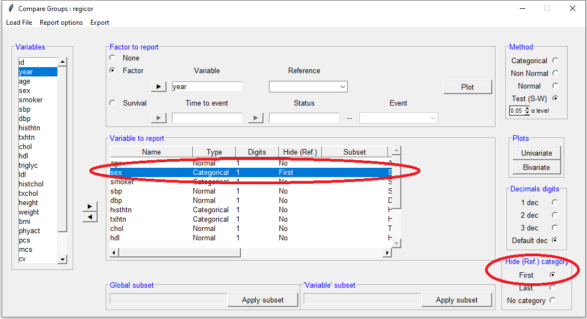

compareGroups 4.0: Descriptives by groups
Isaac Subirana, Joan Vila and Héctor Sanz
2026-01-07
compareGroups_vignette.Rmd
News
tibbleclass data sets possibly imported byhaven,readxl,readr, etc. or to be used bytydiverseanddplyrpackages are supported.new function called
descrTablehas been implemented to build descriptive tables in a single step.export2mdto export descriptive tables to R-markdown documents has been improved and now supports stratified tables for HTML.new funciton called
strataTablehas been implemented to build descriptive tables by stratas (values or levels of a variable).Date variables are treated as continuous-non normal, performing medians, quartiles and non-parametric tests, but now are printed dates.
New argument
var.equaladded incompareGroupsanddescrTable. This allows to consider different variances when comparing means between more than two groups.
Introduction
The compareGroups package (Subirana, Sanz, and Vila 2014) allows users to
create tables displaying results of univariate analyses, stratified or
not by categorical variable groupings.
Tables can easily be exported to CSV, LaTeX, HTML, PDF, Word or Excel, or inserted in R-markdown files to generate reports automatically.
This package can be used from the R
prompt or from a user-friendly graphical user interface for non-R
familiarized users.
The compareGroups package is available
on CRAN repository. To load the package using the
R prompt, enter:
This document provides an overview of the usage of the
compareGroups package with a real
examples, both using the R syntax and the graphical user interface. It
is structure as follows:
- Introduction of the package (section 2) and the data used as example (section 3),
- Instructions to perform descriptive tables and exploration plots
using R syntax are explained (section 4),
and
- Usage of graphical user interface based on tcl-tk (section 5) and based on Shiny (section 6) are shown.
Package structure: classes and methods
The compareGroups package has three
functions:
-
compareGroupscreates an object of classcompareGroups. This object can be:- printed
- summarized
- plotted
- updated
-
createTablecreates an object of classcreateTable. This object can be:- printed
- summarized
-
export2csv,export2html,export2latex,export2pdf,export2md,export2wordandexport2xlswill export results to CSV, HTML, LaTeX, PDF, Markdown, Word or Excel, respectively.
Figure 1 shows how the package is structured in terms of functions, classes and methods.
`
Since version 4.0, a new function called
descrTable has been implemented which is a
shortcut of compareGroupsand createTable,
i.e. step 1 and step 2 in a single step (see section 4.2.5).
Data used as example
To illustrate how this package works we took a sample from REGICOR study. REGICOR is a cross-sectional study with participants from a north-east region of Spain from whom different sets of variables were collected: demographic (age, sex, …), anthropomorphic (height, weight, waist, …), lipid profile (total and cholesterol, triglycerides, …), questionnaires (physical activity, quality of life, …), etc. Also, cardiovascular events and mortality were obtained from hospital and official registries and reports along more than 10 years.
First of all, load REGICOR data typing:
data(regicor)
Variables and labels in this data frame are:
| Name | Label | Codes |
|---|---|---|
| id | Individual id | |
| year | Recruitment year | 1995; 2000; 2005 |
| age | Age | |
| sex | Sex | Male; Female |
| smoker | Smoking status | Never smoker; Current or former < 1y; Former 1y |
| sbp | Systolic blood pressure | |
| dbp | Diastolic blood pressure | |
| histhtn | History of hypertension | Yes; No |
| txhtn | Hypertension treatment | No; Yes |
| chol | Total cholesterol | |
| hdl | HDL cholesterol | |
| triglyc | Triglycerides | |
| ldl | LDL cholesterol | |
| histchol | History of hyperchol. | Yes; No |
| txchol | Cholesterol treatment | No; Yes |
| height | Height (cm) | |
| weight | Weight (Kg) | |
| bmi | Body mass index | |
| phyact | Physical activity (Kcal/week) | |
| pcs | Physical component | |
| mcs | Mental component | |
| cv | Cardiovascular event | No; Yes |
| tocv | Days to cardiovascular event or end of follow-up | |
| death | Overall death | No; Yes |
| todeath | Days to overall death or end of follow-up |
OBSERVATIONS:
It is important to note that
compareGroupsis not aimed to perform quality control of the data. Other useful packages such as2lh(Genolini, Desgraupes, and Franca 2011) are available for this purpose.It is strongly recommended that the data.frame contain only the variables to be analyzed; the ones not needed in the present analysis should be removed from the list.
The nature of variables to be analyzed should be known, or at least which variables are to be used as categorical. It is important to code categorical variables as factors and the order of their levels is meaningful in this package.
To label the variables set the “label” attributes from each of them. The tables of results will contain the variable labels (by default).
Time-to-event variables
A variable of class Surv must be created to deal with
time-to-event variables (i.e., time to Cardiovascular event/censored in
our example):
library(survival)
regicor$tmain <- with(regicor, Surv(tocv, cv == 'Yes'))
attr(regicor$tmain,"label") <- "Time to CV event or censoring"Note that variable tcv are created as time-to-death and time-to-cardiovascular event taking into account censoring (i.e. they are of class Surv).
Using syntax
Computing descriptives
compareGroups is the main function which does all the
calculus. It is needed to store results in an object. Later, applying
the function createTable (Section 4.2) to this object will
create tables of the analysis results.
For example, to perform a univariate analysis with the regicor data between year (“response” variable) and all other variables (“explanatory” variables), this formula is required:
compareGroups(year ~ . , data=regicor)
Selecting response variables
If only a dot occurs on the right side of the ~ all
variables in the data frame will be used.
To remove the variable id from the analysis, use
- in the formula:
compareGroups(year ~ . - id, data=regicor)To select some explanatory variables (e.g., age,
sex and bmi) and store results in an object of class
compareGroups:
res<-compareGroups(year ~ age + sex + bmi, data=regicor)
res
-------- Summary of results by groups of 'Recruitment year'---------
var N p.value method selection
1 Age 2294 0.079* continuous normal ALL
2 Sex 2294 0.506 categorical ALL
3 Body mass index 2259 <0.001** continuous normal ALL
-----
Signif. codes: 0 '**' 0.05 '*' 0.1 ' ' 1 Note: Although we have full data (n= 2294) for Age and Sex, there are some missing data in body mass index (bmi).
Mean values of body mass index is statistically different among recruitment years (p-value < 0.05), while Age and Sex are not statistically related to recruitment year (p-value > 0.05).
Age & BMI has been used as continuous and normal distributed, while sex as categorical.
No filters have been used (e.g., selecting only treated patients); therefore, the selection column lists “ALL” (for all variables).
Subsetting
To perform the analysis in a subset of participants (e.g., “female” participants):
compareGroups(year ~ age + smoker + bmi, data=regicor, subset = sex=='Female')
-------- Summary of results by groups of 'year'---------
var N p.value method selection
1 Age 1193 0.355 continuous normal sex == "Female"
2 Smoking status 1162 <0.001** categorical sex == "Female"
3 Body mass index 1169 0.079* continuous normal sex == "Female"
-----
Signif. codes: 0 '**' 0.05 '*' 0.1 ' ' 1 Note that only results for female participants are shown.
To subset specific variable/s (e.g., age and bmi):
compareGroups(year ~ age + bmi + smoker, data=regicor, selec = list(age= sex=="Female", bmi = age>50 ))
-------- Summary of results by groups of 'Recruitment year'---------
var N p.value method selection
1 Age 1193 0.355 continuous normal sex == "Female"
2 Body mass index 1367 0.002** continuous normal age > 50
3 Smoking status 2233 <0.001** categorical ALL
-----
Signif. codes: 0 '**' 0.05 '*' 0.1 ' ' 1 In this case, age distribution are computed among females, while BMI among people older than 50 years.
Combinations are also allowed, e.g.:
compareGroups(year ~ age + smoker + bmi, data=regicor, selec = list(bmi=age>50), subset = sex=="Female")
-------- Summary of results by groups of 'year'---------
var N p.value method selection
1 Age 1193 0.355 continuous normal sex == "Female"
2 Smoking status 1162 <0.001** categorical sex == "Female"
3 Body mass index 709 0.311 continuous normal (sex == "Female") & (age > 50)
-----
Signif. codes: 0 '**' 0.05 '*' 0.1 ' ' 1 A variable can appear twice in the formula, e.g.:
compareGroups(year ~ age + sex + bmi + bmi, data=regicor, selec = list(bmi.1=txhtn=='Yes'))
-------- Summary of results by groups of 'Recruitment year'---------
var N p.value method selection
1 Age 2294 0.079* continuous normal ALL
2 Sex 2294 0.506 categorical ALL
3 Body mass index 2259 <0.001** continuous normal ALL
4 Body mass index 420 0.006** continuous normal txhtn == "Yes"
-----
Signif. codes: 0 '**' 0.05 '*' 0.1 ' ' 1 In this case results for bmi will be reported for all
participants (n= 2294) and also for only those recieving no hypertension
treatment. Note that “bmi.1” in the selec argument refers
to the second time that bmi appears in the formula.
Methods for continuous variables
By default continuous variables are analyzed as normal-distributed.
When a table is built (see createTable function, Section
4.2), continuous variables will be described with mean and standard
deviation. To change default options, e.g., “tryglic” used as non-normal
distributed:
compareGroups(year ~ age + smoker + triglyc, data=regicor, method = c(triglyc=2))
-------- Summary of results by groups of 'Recruitment year'---------
var N p.value method selection
1 Age 2294 0.079* continuous normal ALL
2 Smoking status 2233 <0.001** categorical ALL
3 Triglycerides 2231 0.762 continuous non-normal ALL
-----
Signif. codes: 0 '**' 0.05 '*' 0.1 ' ' 1 Note that “continuous non-normal” is shown in the method column for the variable Hormone-replacement therapy.
Possible values in methods statement are:
1: forces analysis as normal-distributed
2: forces analysis as continuous non-normal
3: forces analysis as categorical
NA: performs a Shapiro-Wilks test to decide between normal or non-normal
If the method argument is stated as NA for
a variable, then a Shapiro-Wilks test for normality is used to decide if
the variable is normal or non-normal distributed. To change the
significance threshold:
compareGroups(year ~ age + smoker + triglyc, data=regicor, method = c(triglyc=NA), alpha= 0.01)
-------- Summary of results by groups of 'Recruitment year'---------
var N p.value method selection
1 Age 2294 0.079* continuous normal ALL
2 Smoking status 2233 <0.001** categorical ALL
3 Triglycerides 2231 0.762 continuous non-normal ALL
-----
Signif. codes: 0 '**' 0.05 '*' 0.1 ' ' 1 According to Shapiro-Wilks test, stating the cutpoint at 0.01 significance level, triglycerides departed significantly from the normal distribution and therefore the method for this variable will be “continuous non-normal”.
All non factor variables are considered as continuous. Exception is made (by default) for those that have fewer than 5 different values. This threshold can be changed in the min.dis statement:
regicor$age7gr<-as.integer(cut(regicor$age, breaks=c(-Inf,40,45,50,55,65,70,Inf), right=TRUE))
compareGroups(year ~ age7gr, data=regicor, method = c(age7gr=NA))
-------- Summary of results by groups of 'Recruitment year'---------
var N p.value method selection
1 age7gr 2294 0.022** continuous non-normal ALL
-----
Signif. codes: 0 '**' 0.05 '*' 0.1 ' ' 1
compareGroups(year ~ age7gr, data=regicor, method = c(age7gr=NA), min.dis=8)
-------- Summary of results by groups of 'Recruitment year'---------
var N p.value method selection
1 age7gr 2294 0.012** categorical ALL
-----
Signif. codes: 0 '**' 0.05 '*' 0.1 ' ' 1 To avoid errors the maximum categories for the response variable is
set at 5 in this example (default value). If this variable has more than
5 different values, the function compareGroups returns an
error message. For example:
regicor$var6cat <- factor(sample(1:5, nrow(regicor), replace=TRUE))
compareGroups(age7gr ~ sex + bmi + smoker, data=regicor)Error in compareGroups.fit(X = X, y = y, include.label = include.label, :
number of groups must be less or equal to 5Defaults setting can be changed with the max.ylev statement:
compareGroups(age7gr ~ sex + bmi + smoker, data=regicor, max.ylev=7)
-------- Summary of results by groups of 'age7gr'---------
var N p.value method selection
1 Sex 2294 0.950 categorical ALL
2 Body mass index 2259 <0.001** continuous normal ALL
3 Smoking status 2233 <0.001** categorical ALL
-----
Signif. codes: 0 '**' 0.05 '*' 0.1 ' ' 1 Similarly, by default there is a limit for the maximum number of levels for an explanatory variable. If this level is exceeded, the variable is removed from the analysis and a warning message is printed:
compareGroups(year ~ sex + age7gr, method=c(age7gr=3), data=regicor, max.xlev=5)Warning in compareGroups.fit(X = X, y = y, include.label = include.label, :
Variables 'age7gr' have been removed since some errors occurred
Dressing up the output
Although the options described in this section correspond to
compareGroups function, results of changing/setting them
won’t be visible until the table is created with the
createTable function (explained later).
-
include.label: By default the variable labels are shown in the output (if there is no label the name will be printed). Changing the statement include.label from “= TRUE” (default) to “= FALSE” will cause variable names to be printed instead.
compareGroups(year ~ age + smoker + bmi, data=regicor, include.label= FALSE)
-------- Summary of results by groups of 'year'---------
var N p.value method selection
1 age 2294 0.079* continuous normal ALL
2 smoker 2233 <0.001** categorical ALL
3 bmi 2259 <0.001** continuous normal ALL
-----
Signif. codes: 0 '**' 0.05 '*' 0.1 ' ' 1 -
Q1,Q3: When the method for a variable is stated as “2” (i.e., to be analyzed as continuous non-normal; see section 4.1.3), by default the median and quartiles 1 and 3 will be shown in the final results, after applying the functioncreateTable(see Section 4.2).
resu1<-compareGroups(year ~ age + triglyc, data=regicor, method = c(triglyc=2))
createTable(resu1)
--------Summary descriptives table by 'Recruitment year'---------
_______________________________________________________________________
1995 2000 2005 p.overall
N=431 N=786 N=1077
¯¯¯¯¯¯¯¯¯¯¯¯¯¯¯¯¯¯¯¯¯¯¯¯¯¯¯¯¯¯¯¯¯¯¯¯¯¯¯¯¯¯¯¯¯¯¯¯¯¯¯¯¯¯¯¯¯¯¯¯¯¯¯¯¯¯¯¯¯¯¯
Age 54.1 (11.7) 54.3 (11.2) 55.3 (10.6) 0.079
Triglycerides 94.0 [71.0;136] 98.0 [72.0;133] 98.0 [72.0;139] 0.762
¯¯¯¯¯¯¯¯¯¯¯¯¯¯¯¯¯¯¯¯¯¯¯¯¯¯¯¯¯¯¯¯¯¯¯¯¯¯¯¯¯¯¯¯¯¯¯¯¯¯¯¯¯¯¯¯¯¯¯¯¯¯¯¯¯¯¯¯¯¯¯ Note: percentiles 25 and 75 are calculated for “triglycerides”.
To get instead percentile 2.5% and 97.5%:
resu2<-compareGroups(year ~ age + triglyc, data=regicor, method = c(triglyc=2), Q1=0.025, Q3=0.975)
createTable(resu2)
--------Summary descriptives table by 'Recruitment year'---------
_______________________________________________________________________
1995 2000 2005 p.overall
N=431 N=786 N=1077
¯¯¯¯¯¯¯¯¯¯¯¯¯¯¯¯¯¯¯¯¯¯¯¯¯¯¯¯¯¯¯¯¯¯¯¯¯¯¯¯¯¯¯¯¯¯¯¯¯¯¯¯¯¯¯¯¯¯¯¯¯¯¯¯¯¯¯¯¯¯¯
Age 54.1 (11.7) 54.3 (11.2) 55.3 (10.6) 0.079
Triglycerides 94.0 [47.0;292] 98.0 [47.0;278] 98.0 [42.0;293] 0.762
¯¯¯¯¯¯¯¯¯¯¯¯¯¯¯¯¯¯¯¯¯¯¯¯¯¯¯¯¯¯¯¯¯¯¯¯¯¯¯¯¯¯¯¯¯¯¯¯¯¯¯¯¯¯¯¯¯¯¯¯¯¯¯¯¯¯¯¯¯¯¯ To get minimum and maximum:
compareGroups(year ~ age + triglyc, data=regicor, method = c(triglyc=2), Q1=0, Q3=1)-
simplify: Sometimes a categorical variable has no individuals for a specific group. For example, smoker has 3 levels. As an example and to illustrate this problem, we have created a new variable smk with a new category (“Unknown”):
regicor$smk<-regicor$smoker
levels(regicor$smk)<- c("Never smoker", "Current or former < 1y", "Former >= 1y", "Unknown")
attr(regicor$smk,"label")<-"Smoking 4 cat."
cbind(table(regicor$smk)) [,1]
Never smoker 1201
Current or former < 1y 593
Former >= 1y 439
Unknown 0Note that this new category (“unknown”) has no individuals:
compareGroups(year ~ age + smk + bmi, data=regicor)
-------- Summary of results by groups of 'Recruitment year'---------
var N p.value method selection
1 Age 2294 0.079* continuous normal ALL
2 Smoking 4 cat. 2233 <0.001** categorical ALL
3 Body mass index 2259 <0.001** continuous normal ALL
-----
Signif. codes: 0 '**' 0.05 '*' 0.1 ' ' 1 Warning in compare.i(X[, i], y = y, selec.i = selec[i], method.i = method[i], :
Some levels of 'smk' are removed since no observation in that/those levelsNote that a “Warning” message is printed related to the problem with smk.
To avoid using empty categories, simplify must be stated
as TRUE (Default value).
compareGroups(year ~ age + smk + bmi, data=regicor, simplify=FALSE)
-------- Summary of results by groups of 'Recruitment year'---------
var N p.value method selection
1 Age 2294 0.079* continuous normal ALL
2 Smoking 4 cat. 2233 . categorical ALL
3 Body mass index 2259 <0.001** continuous normal ALL
-----
Signif. codes: 0 '**' 0.05 '*' 0.1 ' ' 1 Note that no p-values are calculated for “Smoking” since Chi-squared nor F-Fisher test cannot be computed with a zero row.
Summary
Applying the summary function to an object of class
createTable will obtain a more detailed output:
res<-compareGroups(year ~ age + sex + smoker + bmi + triglyc, method = c(triglyc=2), data=regicor)
summary(res[c(1, 2, 5)])
--- Descriptives of each row-variable by groups of 'Recruitment year' ---
-------------------
row-variable: Age
N mean sd lower upper p.overall p.trend p.1995 vs 2000 p.1995 vs 2005 p.2000 vs 2005
[ALL] 2294 54.73627 11.04926 54.28388 55.18866
1995 431 54.09745 11.7172 52.98813 55.20677 0.078588 0.031665 0.936 0.163 0.158
2000 786 54.33715 11.21814 53.55168 55.12262
2005 1077 55.28319 10.62606 54.64786 55.91853
-------------------
row-variable: Sex
Male Female Male% Female% p.overall p.trend p.1995 vs 2000 p.1995 vs 2005 p.2000 vs 2005
[ALL] 1101 1193 47.99477 52.00523
1995 206 225 47.79582 52.20418 0.505601 0.543829 0.793746 0.793746 0.791583
2000 390 396 49.61832 50.38168
2005 505 572 46.88951 53.11049
-------------------
row-variable: Triglycerides
N med Q1 Q3 lower upper p.overall p.trend p.1995 vs 2000 p.1995 vs 2005 p.2000 vs 2005
[ALL] 2231 97 72 136 95 100
1995 403 94 71 135.5 89 99 0.76155 0.524775 0.836094 0.836094 0.859797
2000 752 98 72 133.25 95 102
2005 1076 98 72 139.25 94 102 Note that because only variables 1, 3 and 4 are selected, only results for Age, Sex and Triglycerides are shown. Age is summarized by the mean and the standard deviation, Sex by frequencies and percentage, and Triglycerides (method=2) by the median and quartiles.
Plotting
Variables can be plotted to see their distribution. Plots differ according to whether the variable is continuous or categorical. Plots can be seen on-screen or saved in different formats (BMP, JPG’, PNG, TIF or PDF). To specify the format use the argument `type’.

Plots also can be done according to grouping variable. In this case only a boxplot is shown for continuous variables:

Updating
The object from compareGroups can later be updated. For
example:
res<-compareGroups(year ~ age + sex + smoker + bmi, data=regicor)
res
-------- Summary of results by groups of 'Recruitment year'---------
var N p.value method selection
1 Age 2294 0.079* continuous normal ALL
2 Sex 2294 0.506 categorical ALL
3 Smoking status 2233 <0.001** categorical ALL
4 Body mass index 2259 <0.001** continuous normal ALL
-----
Signif. codes: 0 '**' 0.05 '*' 0.1 ' ' 1 The object res is updated using:
res<-update(res, . ~. - sex + triglyc + cv + tocv, subset = sex=='Female', method = c(triglyc=2, tocv=2), selec = list(triglyc=txchol=='No'))
resNote that “Sex” is removed as an explanatory variable but used as a filter, subsetting only “Female” participants. Three new variables have been added: Triglycerides, cardiovascular event (yes/no) and time to cardiovascular event or censoring (stated continuous non-normal). For Triglycerides is stated to show only data of participants with no treatment for cholesterol.
Substracting results
Since version 3.0, there is a new function called
getResults to retrieve some specific results computed by
compareGroups, such as p-values, descriptives (means,
proportions, …), etc.
For example, it may be interesting to recover the p-values for each
variable as a vector to further manipulate it in
R, like adjusting for multiple comparison
with p.adjust. For example, lets take the example data from
SNPassoc package that contains information
of dozens of SNPs (genetic variants) from a sample of cases and
controls. In this case we analize five of them:
data(SNPs)
tab <- createTable(compareGroups(casco ~ snp10001 + snp10002 + snp10005 + snp10008 + snp10009, SNPs))
pvals <- getResults(tab, "p.overall")
p.adjust(pvals, method = "BH") snp10001 snp10002 snp10005 snp10008 snp10009
0.7051300 0.7072158 0.7583432 0.7583432 0.7072158
Alternatively, since 4.6.0 version, a new function called
padjustCompareGroups created by Jordi Real
<jordirealp.adjust function, i.e. Bonferroni, False Discovery Rate,
etc.
This function takes the compareGroups object and
re-computes the p-values. To obtain the same table as above with the
p-values correted by “BH” method:
cg <- compareGroups(casco ~ snp10001 + snp10002 + snp10005 + snp10008 + snp10009, SNPs)
createTable(padjustCompareGroups(cg, method="BH"))
--------Summary descriptives table by 'casco'---------
_________________________________________
0 1 p.overall
N=47 N=110
¯¯¯¯¯¯¯¯¯¯¯¯¯¯¯¯¯¯¯¯¯¯¯¯¯¯¯¯¯¯¯¯¯¯¯¯¯¯¯¯¯
snp10001: 0.705
CC 2 (4.26%) 10 (9.09%)
CT 21 (44.7%) 32 (29.1%)
TT 24 (51.1%) 68 (61.8%)
snp10002: 0.707
AA 0 (0.00%) 5 (4.55%)
AC 25 (53.2%) 53 (48.2%)
CC 22 (46.8%) 52 (47.3%)
snp10005: 0.758
AA 0 (0.00%) 3 (2.73%)
AG 22 (46.8%) 48 (43.6%)
GG 25 (53.2%) 59 (53.6%)
snp10008: 0.758
CC 30 (63.8%) 74 (67.3%)
CG 15 (31.9%) 29 (26.4%)
GG 2 (4.26%) 7 (6.36%)
snp10009: 0.707
AA 21 (45.7%) 51 (46.4%)
AG 25 (54.3%) 54 (49.1%)
GG 0 (0.00%) 5 (4.55%)
¯¯¯¯¯¯¯¯¯¯¯¯¯¯¯¯¯¯¯¯¯¯¯¯¯¯¯¯¯¯¯¯¯¯¯¯¯¯¯¯¯
Odds Ratios and Hazard Ratios
When the response variable is binary, the Odds Ratio (OR) can be printed in the final table. If the response variable is time-to-event (see Section 3.1), the Hazard Ratio (HR) can be printed instead.
-
ref: This statement can be used to change the reference category:
res1<-compareGroups(cv ~ age + sex + bmi + smoker, data=regicor, ref=1)
createTable(res1, show.ratio=TRUE)
--------Summary descriptives table by 'Cardiovascular event'---------
______________________________________________________________________________________
No Yes OR p.ratio p.overall
N=2071 N=92
¯¯¯¯¯¯¯¯¯¯¯¯¯¯¯¯¯¯¯¯¯¯¯¯¯¯¯¯¯¯¯¯¯¯¯¯¯¯¯¯¯¯¯¯¯¯¯¯¯¯¯¯¯¯¯¯¯¯¯¯¯¯¯¯¯¯¯¯¯¯¯¯¯¯¯¯¯¯¯¯¯¯¯¯¯¯
Age 54.6 (11.1) 57.5 (11.0) 1.02 [1.00;1.04] 0.017 0.018
Sex: 0.801
Male 996 (48.1%) 46 (50.0%) Ref. Ref.
Female 1075 (51.9%) 46 (50.0%) 0.93 [0.61;1.41] 0.721
Body mass index 27.6 (4.56) 28.1 (4.48) 1.02 [0.98;1.07] 0.313 0.307
Smoking status: <0.001
Never smoker 1099 (54.3%) 37 (40.2%) Ref. Ref.
Current or former < 1y 506 (25.0%) 47 (51.1%) 2.75 [1.77;4.32] <0.001
Former >= 1y 419 (20.7%) 8 (8.70%) 0.58 [0.25;1.19] 0.142
¯¯¯¯¯¯¯¯¯¯¯¯¯¯¯¯¯¯¯¯¯¯¯¯¯¯¯¯¯¯¯¯¯¯¯¯¯¯¯¯¯¯¯¯¯¯¯¯¯¯¯¯¯¯¯¯¯¯¯¯¯¯¯¯¯¯¯¯¯¯¯¯¯¯¯¯¯¯¯¯¯¯¯¯¯¯ Note that for categorical response variables the reference category is the first one in the statement:
res2<-compareGroups(cv ~ age + sex + bmi + smoker, data=regicor, ref=c(smoker=1, sex=2))
createTable(res2, show.ratio=TRUE)
--------Summary descriptives table by 'Cardiovascular event'---------
______________________________________________________________________________________
No Yes OR p.ratio p.overall
N=2071 N=92
¯¯¯¯¯¯¯¯¯¯¯¯¯¯¯¯¯¯¯¯¯¯¯¯¯¯¯¯¯¯¯¯¯¯¯¯¯¯¯¯¯¯¯¯¯¯¯¯¯¯¯¯¯¯¯¯¯¯¯¯¯¯¯¯¯¯¯¯¯¯¯¯¯¯¯¯¯¯¯¯¯¯¯¯¯¯
Age 54.6 (11.1) 57.5 (11.0) 1.02 [1.00;1.04] 0.017 0.018
Sex: 0.801
Male 996 (48.1%) 46 (50.0%) 1.08 [0.71;1.64] 0.721
Female 1075 (51.9%) 46 (50.0%) Ref. Ref.
Body mass index 27.6 (4.56) 28.1 (4.48) 1.02 [0.98;1.07] 0.313 0.307
Smoking status: <0.001
Never smoker 1099 (54.3%) 37 (40.2%) Ref. Ref.
Current or former < 1y 506 (25.0%) 47 (51.1%) 2.75 [1.77;4.32] <0.001
Former >= 1y 419 (20.7%) 8 (8.70%) 0.58 [0.25;1.19] 0.142
¯¯¯¯¯¯¯¯¯¯¯¯¯¯¯¯¯¯¯¯¯¯¯¯¯¯¯¯¯¯¯¯¯¯¯¯¯¯¯¯¯¯¯¯¯¯¯¯¯¯¯¯¯¯¯¯¯¯¯¯¯¯¯¯¯¯¯¯¯¯¯¯¯¯¯¯¯¯¯¯¯¯¯¯¯¯ Note that the reference category for Smoking status is the first and for Sex the second.
-
ref.no: Similarly to therefstatement,ref.nois used to state “no” as the reference category for all variables with this category:
res<-compareGroups(cv ~ age + sex + bmi + histhtn + txhtn, data=regicor, ref.no='NO')
createTable(res, show.ratio=TRUE)
--------Summary descriptives table by 'Cardiovascular event'---------
____________________________________________________________________________________
No Yes OR p.ratio p.overall
N=2071 N=92
¯¯¯¯¯¯¯¯¯¯¯¯¯¯¯¯¯¯¯¯¯¯¯¯¯¯¯¯¯¯¯¯¯¯¯¯¯¯¯¯¯¯¯¯¯¯¯¯¯¯¯¯¯¯¯¯¯¯¯¯¯¯¯¯¯¯¯¯¯¯¯¯¯¯¯¯¯¯¯¯¯¯¯¯
Age 54.6 (11.1) 57.5 (11.0) 1.02 [1.00;1.04] 0.017 0.018
Sex: 0.801
Male 996 (48.1%) 46 (50.0%) Ref. Ref.
Female 1075 (51.9%) 46 (50.0%) 0.93 [0.61;1.41] 0.721
Body mass index 27.6 (4.56) 28.1 (4.48) 1.02 [0.98;1.07] 0.313 0.307
History of hypertension: 0.058
Yes 647 (31.3%) 38 (41.3%) 1.54 [1.00;2.36] 0.049
No 1418 (68.7%) 54 (58.7%) Ref. Ref.
Hypertension treatment: 0.270
No 1657 (81.3%) 70 (76.1%) Ref. Ref.
Yes 382 (18.7%) 22 (23.9%) 1.37 [0.82;2.21] 0.223
¯¯¯¯¯¯¯¯¯¯¯¯¯¯¯¯¯¯¯¯¯¯¯¯¯¯¯¯¯¯¯¯¯¯¯¯¯¯¯¯¯¯¯¯¯¯¯¯¯¯¯¯¯¯¯¯¯¯¯¯¯¯¯¯¯¯¯¯¯¯¯¯¯¯¯¯¯¯¯¯¯¯¯¯ Note: “no”, “No” or “NO” will produce the same results; the coding is not case sensitive.
-
fact.ratio: By default OR or HR for continuous variables are calculated for each unit increase. It can be changed by thefact.orstatement:
res<-compareGroups(cv ~ age + bmi, data=regicor)
createTable(res, show.ratio=TRUE)
--------Summary descriptives table by 'Cardiovascular event'---------
__________________________________________________________________________
No Yes OR p.ratio p.overall
N=2071 N=92
¯¯¯¯¯¯¯¯¯¯¯¯¯¯¯¯¯¯¯¯¯¯¯¯¯¯¯¯¯¯¯¯¯¯¯¯¯¯¯¯¯¯¯¯¯¯¯¯¯¯¯¯¯¯¯¯¯¯¯¯¯¯¯¯¯¯¯¯¯¯¯¯¯¯
Age 54.6 (11.1) 57.5 (11.0) 1.02 [1.00;1.04] 0.017 0.018
Body mass index 27.6 (4.56) 28.1 (4.48) 1.02 [0.98;1.07] 0.313 0.307
¯¯¯¯¯¯¯¯¯¯¯¯¯¯¯¯¯¯¯¯¯¯¯¯¯¯¯¯¯¯¯¯¯¯¯¯¯¯¯¯¯¯¯¯¯¯¯¯¯¯¯¯¯¯¯¯¯¯¯¯¯¯¯¯¯¯¯¯¯¯¯¯¯¯ Here the OR is for the increase of one unit for Age and “Body mass index”.
res<-compareGroups(cv ~ age + bmi, data=regicor, fact.ratio= c(age=10, bmi=2))
createTable(res, show.ratio=TRUE)
--------Summary descriptives table by 'Cardiovascular event'---------
__________________________________________________________________________
No Yes OR p.ratio p.overall
N=2071 N=92
¯¯¯¯¯¯¯¯¯¯¯¯¯¯¯¯¯¯¯¯¯¯¯¯¯¯¯¯¯¯¯¯¯¯¯¯¯¯¯¯¯¯¯¯¯¯¯¯¯¯¯¯¯¯¯¯¯¯¯¯¯¯¯¯¯¯¯¯¯¯¯¯¯¯
Age 54.6 (11.1) 57.5 (11.0) 1.26 [1.04;1.53] 0.017 0.018
Body mass index 27.6 (4.56) 28.1 (4.48) 1.05 [0.96;1.14] 0.313 0.307
¯¯¯¯¯¯¯¯¯¯¯¯¯¯¯¯¯¯¯¯¯¯¯¯¯¯¯¯¯¯¯¯¯¯¯¯¯¯¯¯¯¯¯¯¯¯¯¯¯¯¯¯¯¯¯¯¯¯¯¯¯¯¯¯¯¯¯¯¯¯¯¯¯¯ Here the OR is for the increase of 10 years for Age and 2 units for “Body mass index”.
-
ref.y: By default when OR or HR are calculated, the reference category for the response variable is the first. The reference category could be changed using theref.ystatement:
res<-compareGroups(cv ~ age + sex + bmi + txhtn, data=regicor)
createTable(res, show.ratio=TRUE)
--------Summary descriptives table by 'Cardiovascular event'---------
___________________________________________________________________________________
No Yes OR p.ratio p.overall
N=2071 N=92
¯¯¯¯¯¯¯¯¯¯¯¯¯¯¯¯¯¯¯¯¯¯¯¯¯¯¯¯¯¯¯¯¯¯¯¯¯¯¯¯¯¯¯¯¯¯¯¯¯¯¯¯¯¯¯¯¯¯¯¯¯¯¯¯¯¯¯¯¯¯¯¯¯¯¯¯¯¯¯¯¯¯¯
Age 54.6 (11.1) 57.5 (11.0) 1.02 [1.00;1.04] 0.017 0.018
Sex: 0.801
Male 996 (48.1%) 46 (50.0%) Ref. Ref.
Female 1075 (51.9%) 46 (50.0%) 0.93 [0.61;1.41] 0.721
Body mass index 27.6 (4.56) 28.1 (4.48) 1.02 [0.98;1.07] 0.313 0.307
Hypertension treatment: 0.270
No 1657 (81.3%) 70 (76.1%) Ref. Ref.
Yes 382 (18.7%) 22 (23.9%) 1.37 [0.82;2.21] 0.223
¯¯¯¯¯¯¯¯¯¯¯¯¯¯¯¯¯¯¯¯¯¯¯¯¯¯¯¯¯¯¯¯¯¯¯¯¯¯¯¯¯¯¯¯¯¯¯¯¯¯¯¯¯¯¯¯¯¯¯¯¯¯¯¯¯¯¯¯¯¯¯¯¯¯¯¯¯¯¯¯¯¯¯ Note: This output shows the OR of having a cardiovascular event. Therefore, having no event is the reference category.
res<-compareGroups(cv ~ age + sex + bmi + txhtn, data=regicor, ref.y=2)
createTable(res, show.ratio=TRUE)
--------Summary descriptives table by 'Cardiovascular event'---------
___________________________________________________________________________________
No Yes OR p.ratio p.overall
N=2071 N=92
¯¯¯¯¯¯¯¯¯¯¯¯¯¯¯¯¯¯¯¯¯¯¯¯¯¯¯¯¯¯¯¯¯¯¯¯¯¯¯¯¯¯¯¯¯¯¯¯¯¯¯¯¯¯¯¯¯¯¯¯¯¯¯¯¯¯¯¯¯¯¯¯¯¯¯¯¯¯¯¯¯¯¯
Age 54.6 (11.1) 57.5 (11.0) 0.98 [1.00;0.96] 0.017 0.018
Sex: 0.801
Male 996 (48.1%) 46 (50.0%) Ref. Ref.
Female 1075 (51.9%) 46 (50.0%) 1.08 [0.71;1.64] 0.721
Body mass index 27.6 (4.56) 28.1 (4.48) 0.98 [1.02;0.93] 0.313 0.307
Hypertension treatment: 0.270
No 1657 (81.3%) 70 (76.1%) Ref. Ref.
Yes 382 (18.7%) 22 (23.9%) 0.73 [0.45;1.22] 0.223
¯¯¯¯¯¯¯¯¯¯¯¯¯¯¯¯¯¯¯¯¯¯¯¯¯¯¯¯¯¯¯¯¯¯¯¯¯¯¯¯¯¯¯¯¯¯¯¯¯¯¯¯¯¯¯¯¯¯¯¯¯¯¯¯¯¯¯¯¯¯¯¯¯¯¯¯¯¯¯¯¯¯¯ Note: This output shows the OR of having no event, and event is now the reference category.
When the response variable is of class Surv, the
bivariate plot function returns a Kaplan-Meier figure if
the explanatory variable is categorical. For continuous variables the
function returns a line for each individual, ending with a circle for
censored and with a plus sign for uncensored.
plot(compareGroups(tmain ~ sex, data=regicor), bivar=TRUE, file="./figures/bivarsurv/", type="png")
plot(compareGroups(tmain ~ age, data=regicor), bivar=TRUE, file="./figures/bivarsurv/", type="png")
Time-to-event explanatory variables
When a variable of class Surv (see Section 3.1) is used
as explanatory it will be described with the probability of event,
computed by Kaplan-Meier, up to a stated time.
-
timemax: By default probability is calculated at the median of the follow-up period.timemaxoption allows us to change at what time probability is calculated.
res<-compareGroups(sex ~ age + tmain, timemax=c(tmain=3*365.25), data=regicor)
resNote that tmain is calculated at 3 years, i.e. 3*365.25
days (see section 3.1).
The plot function applied to a variable of class
Surv returns a Kaplan-Meier figure. The figure can be
stratified by the grouping variable.
plot(res[2], file="./figures/univar/", type="png")
plot(res[2], bivar=TRUE, file="./figures/bivar/", type="png")

Performing the descritive table
The createTable function, applied to an object of
compareGroups class, returns tables with descriptives that
can be displayed on-screen or exported to CSV, LaTeX, HTML, Word or
Excel.
res<-compareGroups(year ~ age + sex + smoker + bmi + sbp, data=regicor, selec = list(sbp=txhtn=="No"))
restab<-createTable(res)Two tables are created with the createTable function:
one with the descriptives and the other with the available data. The
print method applied to an object of class
createTable prints one or both tables on the
R console:
print(restab,which.table='descr')
--------Summary descriptives table by 'Recruitment year'---------
________________________________________________________________________
1995 2000 2005 p.overall
N=431 N=786 N=1077
¯¯¯¯¯¯¯¯¯¯¯¯¯¯¯¯¯¯¯¯¯¯¯¯¯¯¯¯¯¯¯¯¯¯¯¯¯¯¯¯¯¯¯¯¯¯¯¯¯¯¯¯¯¯¯¯¯¯¯¯¯¯¯¯¯¯¯¯¯¯¯¯
Age 54.1 (11.7) 54.3 (11.2) 55.3 (10.6) 0.079
Sex: 0.506
Male 206 (47.8%) 390 (49.6%) 505 (46.9%)
Female 225 (52.2%) 396 (50.4%) 572 (53.1%)
Smoking status: <0.001
Never smoker 234 (56.4%) 414 (54.6%) 553 (52.2%)
Current or former < 1y 109 (26.3%) 267 (35.2%) 217 (20.5%)
Former >= 1y 72 (17.3%) 77 (10.2%) 290 (27.4%)
Body mass index 27.0 (4.15) 28.1 (4.62) 27.6 (4.63) <0.001
Systolic blood pressure 129 (17.4) 130 (20.1) 124 (16.9) <0.001
¯¯¯¯¯¯¯¯¯¯¯¯¯¯¯¯¯¯¯¯¯¯¯¯¯¯¯¯¯¯¯¯¯¯¯¯¯¯¯¯¯¯¯¯¯¯¯¯¯¯¯¯¯¯¯¯¯¯¯¯¯¯¯¯¯¯¯¯¯¯¯¯ Note that the option “descr” prints descriptive tables.
print(restab,which.table='avail')
---Available data----
____________________________________________________________________________
[ALL] 1995 2000 2005 method select
¯¯¯¯¯¯¯¯¯¯¯¯¯¯¯¯¯¯¯¯¯¯¯¯¯¯¯¯¯¯¯¯¯¯¯¯¯¯¯¯¯¯¯¯¯¯¯¯¯¯¯¯¯¯¯¯¯¯¯¯¯¯¯¯¯¯¯¯¯¯¯¯¯¯¯¯
Age 2294 431 786 1077 continuous-normal ALL
Sex 2294 431 786 1077 categorical ALL
Smoking status 2233 415 758 1060 categorical ALL
Body mass index 2259 423 771 1065 continuous-normal ALL
Systolic blood pressure 1810 357 649 804 continuous-normal txhtn == "No"
¯¯¯¯¯¯¯¯¯¯¯¯¯¯¯¯¯¯¯¯¯¯¯¯¯¯¯¯¯¯¯¯¯¯¯¯¯¯¯¯¯¯¯¯¯¯¯¯¯¯¯¯¯¯¯¯¯¯¯¯¯¯¯¯¯¯¯¯¯¯¯¯¯¯¯¯ While the option “avail” prints the available data, as well as methods and selections.
By default, only the descriptives table is shown. Stating “both” in
which.table argument prints both tables.
Dressing up tables
-
hide: If the explanatory variable is dichotomous, one of the categories often is hidden in the results displayed (i.e., if 48% are male, obviously 52% are female). To hide some category, e.g., “Male”:
--------Summary descriptives table by 'Recruitment year'---------
________________________________________________________________________
1995 2000 2005 p.overall
N=431 N=786 N=1077
¯¯¯¯¯¯¯¯¯¯¯¯¯¯¯¯¯¯¯¯¯¯¯¯¯¯¯¯¯¯¯¯¯¯¯¯¯¯¯¯¯¯¯¯¯¯¯¯¯¯¯¯¯¯¯¯¯¯¯¯¯¯¯¯¯¯¯¯¯¯¯¯
Age 54.1 (11.7) 54.3 (11.2) 55.3 (10.6) 0.079
Sex: Female 225 (52.2%) 396 (50.4%) 572 (53.1%) 0.506
Smoking status: <0.001
Never smoker 234 (56.4%) 414 (54.6%) 553 (52.2%)
Current or former < 1y 109 (26.3%) 267 (35.2%) 217 (20.5%)
Former >= 1y 72 (17.3%) 77 (10.2%) 290 (27.4%)
Body mass index 27.0 (4.15) 28.1 (4.62) 27.6 (4.63) <0.001
Systolic blood pressure 129 (17.4) 130 (20.1) 124 (16.9) <0.001
¯¯¯¯¯¯¯¯¯¯¯¯¯¯¯¯¯¯¯¯¯¯¯¯¯¯¯¯¯¯¯¯¯¯¯¯¯¯¯¯¯¯¯¯¯¯¯¯¯¯¯¯¯¯¯¯¯¯¯¯¯¯¯¯¯¯¯¯¯¯¯¯ Note that the percentage of males is hidden.
-
hide.no: Similarly, as explained above, if the category “no” is to be hidden for all variables:
res<-compareGroups(year ~ age + sex + histchol + histhtn, data=regicor)
createTable(res, hide.no='no', hide = c(sex="Male"))
--------Summary descriptives table by 'Recruitment year'---------
_____________________________________________________________________
1995 2000 2005 p.overall
N=431 N=786 N=1077
¯¯¯¯¯¯¯¯¯¯¯¯¯¯¯¯¯¯¯¯¯¯¯¯¯¯¯¯¯¯¯¯¯¯¯¯¯¯¯¯¯¯¯¯¯¯¯¯¯¯¯¯¯¯¯¯¯¯¯¯¯¯¯¯¯¯¯¯¯
Age 54.1 (11.7) 54.3 (11.2) 55.3 (10.6) 0.079
Sex: Female 225 (52.2%) 396 (50.4%) 572 (53.1%) 0.506
History of hyperchol. 97 (22.5%) 256 (33.2%) 356 (33.2%) <0.001
History of hypertension 111 (25.8%) 233 (29.6%) 379 (35.5%) <0.001
¯¯¯¯¯¯¯¯¯¯¯¯¯¯¯¯¯¯¯¯¯¯¯¯¯¯¯¯¯¯¯¯¯¯¯¯¯¯¯¯¯¯¯¯¯¯¯¯¯¯¯¯¯¯¯¯¯¯¯¯¯¯¯¯¯¯¯¯¯ Note: “no”, “No” or “NO” will produce the same results; the coding is not case sensitive.
-
digits: The number of digits that appear in the results can be changed, e.g:
createTable(res, digits= c(age=2, sex = 3))
--------Summary descriptives table by 'Recruitment year'---------
____________________________________________________________________________
1995 2000 2005 p.overall
N=431 N=786 N=1077
¯¯¯¯¯¯¯¯¯¯¯¯¯¯¯¯¯¯¯¯¯¯¯¯¯¯¯¯¯¯¯¯¯¯¯¯¯¯¯¯¯¯¯¯¯¯¯¯¯¯¯¯¯¯¯¯¯¯¯¯¯¯¯¯¯¯¯¯¯¯¯¯¯¯¯¯
Age 54.10 (11.72) 54.34 (11.22) 55.28 (10.63) 0.079
Sex: 0.506
Male 206 (47.796%) 390 (49.618%) 505 (46.890%)
Female 225 (52.204%) 396 (50.382%) 572 (53.110%)
History of hyperchol.: <0.001
Yes 97 (22.5%) 256 (33.2%) 356 (33.2%)
No 334 (77.5%) 515 (66.8%) 715 (66.8%)
History of hypertension: <0.001
Yes 111 (25.8%) 233 (29.6%) 379 (35.5%)
No 320 (74.2%) 553 (70.4%) 690 (64.5%)
¯¯¯¯¯¯¯¯¯¯¯¯¯¯¯¯¯¯¯¯¯¯¯¯¯¯¯¯¯¯¯¯¯¯¯¯¯¯¯¯¯¯¯¯¯¯¯¯¯¯¯¯¯¯¯¯¯¯¯¯¯¯¯¯¯¯¯¯¯¯¯¯¯¯¯¯ Note that mean and standard deviation has two decimal places for age, while percentage in sex has been set to three decimal places.
-
type: By default categorical variables are summarized by frequencies and percentages. This can be changed by thetypeargument:
createTable(res, type=1)
--------Summary descriptives table by 'Recruitment year'---------
______________________________________________________________________
1995 2000 2005 p.overall
N=431 N=786 N=1077
¯¯¯¯¯¯¯¯¯¯¯¯¯¯¯¯¯¯¯¯¯¯¯¯¯¯¯¯¯¯¯¯¯¯¯¯¯¯¯¯¯¯¯¯¯¯¯¯¯¯¯¯¯¯¯¯¯¯¯¯¯¯¯¯¯¯¯¯¯¯
Age 54.1 (11.7) 54.3 (11.2) 55.3 (10.6) 0.079
Sex: 0.506
Male 47.8% 49.6% 46.9%
Female 52.2% 50.4% 53.1%
History of hyperchol.: <0.001
Yes 22.5% 33.2% 33.2%
No 77.5% 66.8% 66.8%
History of hypertension: <0.001
Yes 25.8% 29.6% 35.5%
No 74.2% 70.4% 64.5%
¯¯¯¯¯¯¯¯¯¯¯¯¯¯¯¯¯¯¯¯¯¯¯¯¯¯¯¯¯¯¯¯¯¯¯¯¯¯¯¯¯¯¯¯¯¯¯¯¯¯¯¯¯¯¯¯¯¯¯¯¯¯¯¯¯¯¯¯¯¯ Note that only percentages are displayed.
createTable(res, type=3)
--------Summary descriptives table by 'Recruitment year'---------
______________________________________________________________________
1995 2000 2005 p.overall
N=431 N=786 N=1077
¯¯¯¯¯¯¯¯¯¯¯¯¯¯¯¯¯¯¯¯¯¯¯¯¯¯¯¯¯¯¯¯¯¯¯¯¯¯¯¯¯¯¯¯¯¯¯¯¯¯¯¯¯¯¯¯¯¯¯¯¯¯¯¯¯¯¯¯¯¯
Age 54.1 (11.7) 54.3 (11.2) 55.3 (10.6) 0.079
Sex: 0.506
Male 206 390 505
Female 225 396 572
History of hyperchol.: <0.001
Yes 97 256 356
No 334 515 715
History of hypertension: <0.001
Yes 111 233 379
No 320 553 690
¯¯¯¯¯¯¯¯¯¯¯¯¯¯¯¯¯¯¯¯¯¯¯¯¯¯¯¯¯¯¯¯¯¯¯¯¯¯¯¯¯¯¯¯¯¯¯¯¯¯¯¯¯¯¯¯¯¯¯¯¯¯¯¯¯¯¯¯¯¯ Note that only frequencies are displayed.
Value 2 or NA return the same results, i.e., the default
option.
-
show.n: If optionshow.nis set toTRUEa column with available data for each variable appears in the results:
createTable(res, show.n=TRUE)
--------Summary descriptives table by 'Recruitment year'---------
___________________________________________________________________________
1995 2000 2005 p.overall N
N=431 N=786 N=1077
¯¯¯¯¯¯¯¯¯¯¯¯¯¯¯¯¯¯¯¯¯¯¯¯¯¯¯¯¯¯¯¯¯¯¯¯¯¯¯¯¯¯¯¯¯¯¯¯¯¯¯¯¯¯¯¯¯¯¯¯¯¯¯¯¯¯¯¯¯¯¯¯¯¯¯
Age 54.1 (11.7) 54.3 (11.2) 55.3 (10.6) 0.079 2294
Sex: 0.506 2294
Male 206 (47.8%) 390 (49.6%) 505 (46.9%)
Female 225 (52.2%) 396 (50.4%) 572 (53.1%)
History of hyperchol.: <0.001 2273
Yes 97 (22.5%) 256 (33.2%) 356 (33.2%)
No 334 (77.5%) 515 (66.8%) 715 (66.8%)
History of hypertension: <0.001 2286
Yes 111 (25.8%) 233 (29.6%) 379 (35.5%)
No 320 (74.2%) 553 (70.4%) 690 (64.5%)
¯¯¯¯¯¯¯¯¯¯¯¯¯¯¯¯¯¯¯¯¯¯¯¯¯¯¯¯¯¯¯¯¯¯¯¯¯¯¯¯¯¯¯¯¯¯¯¯¯¯¯¯¯¯¯¯¯¯¯¯¯¯¯¯¯¯¯¯¯¯¯¯¯¯¯ -
show.descr: If argumentshow.descris set toFALSEonly p-values are displayed:
createTable(res, show.descr=FALSE)
--------Summary descriptives table by 'Recruitment year'---------
__________________________________
p.overall
¯¯¯¯¯¯¯¯¯¯¯¯¯¯¯¯¯¯¯¯¯¯¯¯¯¯¯¯¯¯¯¯¯¯
Age 0.079
Sex:
Male 0.506
Female
History of hyperchol.:
Yes <0.001
No
History of hypertension:
Yes <0.001
No
¯¯¯¯¯¯¯¯¯¯¯¯¯¯¯¯¯¯¯¯¯¯¯¯¯¯¯¯¯¯¯¯¯¯ -
show.all: Ifshow.allargument is set toTRUEa column is displayed with descriptives for all data:
createTable(res, show.all=TRUE)
--------Summary descriptives table by 'Recruitment year'---------
___________________________________________________________________________________
[ALL] 1995 2000 2005 p.overall
N=2294 N=431 N=786 N=1077
¯¯¯¯¯¯¯¯¯¯¯¯¯¯¯¯¯¯¯¯¯¯¯¯¯¯¯¯¯¯¯¯¯¯¯¯¯¯¯¯¯¯¯¯¯¯¯¯¯¯¯¯¯¯¯¯¯¯¯¯¯¯¯¯¯¯¯¯¯¯¯¯¯¯¯¯¯¯¯¯¯¯¯
Age 54.7 (11.0) 54.1 (11.7) 54.3 (11.2) 55.3 (10.6) 0.079
Sex: 0.506
Male 1101 (48.0%) 206 (47.8%) 390 (49.6%) 505 (46.9%)
Female 1193 (52.0%) 225 (52.2%) 396 (50.4%) 572 (53.1%)
History of hyperchol.: <0.001
Yes 709 (31.2%) 97 (22.5%) 256 (33.2%) 356 (33.2%)
No 1564 (68.8%) 334 (77.5%) 515 (66.8%) 715 (66.8%)
History of hypertension: <0.001
Yes 723 (31.6%) 111 (25.8%) 233 (29.6%) 379 (35.5%)
No 1563 (68.4%) 320 (74.2%) 553 (70.4%) 690 (64.5%)
¯¯¯¯¯¯¯¯¯¯¯¯¯¯¯¯¯¯¯¯¯¯¯¯¯¯¯¯¯¯¯¯¯¯¯¯¯¯¯¯¯¯¯¯¯¯¯¯¯¯¯¯¯¯¯¯¯¯¯¯¯¯¯¯¯¯¯¯¯¯¯¯¯¯¯¯¯¯¯¯¯¯¯ -
show.p.overall: Ifshow.p.overallargument is set toFALSEp-values are omitted from the table:
createTable(res, show.p.overall=FALSE)
--------Summary descriptives table by 'Recruitment year'---------
____________________________________________________________
1995 2000 2005
N=431 N=786 N=1077
¯¯¯¯¯¯¯¯¯¯¯¯¯¯¯¯¯¯¯¯¯¯¯¯¯¯¯¯¯¯¯¯¯¯¯¯¯¯¯¯¯¯¯¯¯¯¯¯¯¯¯¯¯¯¯¯¯¯¯¯
Age 54.1 (11.7) 54.3 (11.2) 55.3 (10.6)
Sex:
Male 206 (47.8%) 390 (49.6%) 505 (46.9%)
Female 225 (52.2%) 396 (50.4%) 572 (53.1%)
History of hyperchol.:
Yes 97 (22.5%) 256 (33.2%) 356 (33.2%)
No 334 (77.5%) 515 (66.8%) 715 (66.8%)
History of hypertension:
Yes 111 (25.8%) 233 (29.6%) 379 (35.5%)
No 320 (74.2%) 553 (70.4%) 690 (64.5%)
¯¯¯¯¯¯¯¯¯¯¯¯¯¯¯¯¯¯¯¯¯¯¯¯¯¯¯¯¯¯¯¯¯¯¯¯¯¯¯¯¯¯¯¯¯¯¯¯¯¯¯¯¯¯¯¯¯¯¯¯ -
show.p.trend: If the response variable has more than two categories a p-value for trend can be calculated. Results are displayed if theshow.p.trendargument is set toTRUE:
createTable(res, show.p.trend=TRUE)
--------Summary descriptives table by 'Recruitment year'---------
______________________________________________________________________________
1995 2000 2005 p.overall p.trend
N=431 N=786 N=1077
¯¯¯¯¯¯¯¯¯¯¯¯¯¯¯¯¯¯¯¯¯¯¯¯¯¯¯¯¯¯¯¯¯¯¯¯¯¯¯¯¯¯¯¯¯¯¯¯¯¯¯¯¯¯¯¯¯¯¯¯¯¯¯¯¯¯¯¯¯¯¯¯¯¯¯¯¯¯
Age 54.1 (11.7) 54.3 (11.2) 55.3 (10.6) 0.079 0.032
Sex: 0.506 0.544
Male 206 (47.8%) 390 (49.6%) 505 (46.9%)
Female 225 (52.2%) 396 (50.4%) 572 (53.1%)
History of hyperchol.: <0.001 <0.001
Yes 97 (22.5%) 256 (33.2%) 356 (33.2%)
No 334 (77.5%) 515 (66.8%) 715 (66.8%)
History of hypertension: <0.001 <0.001
Yes 111 (25.8%) 233 (29.6%) 379 (35.5%)
No 320 (74.2%) 553 (70.4%) 690 (64.5%)
¯¯¯¯¯¯¯¯¯¯¯¯¯¯¯¯¯¯¯¯¯¯¯¯¯¯¯¯¯¯¯¯¯¯¯¯¯¯¯¯¯¯¯¯¯¯¯¯¯¯¯¯¯¯¯¯¯¯¯¯¯¯¯¯¯¯¯¯¯¯¯¯¯¯¯¯¯¯ Note: The p-value for trend is computed from the Pearson test when
row-variable is normal and from the Spearman test when it is continuous
non-normal. If row-variable is of class Surv, the test
score is computed from a Cox model where the grouping variable is
introduced as an integer variable predictor. If the row-variable is
categorical, the p-value for trend is computed as
1-pchisq(cor(as.integer(x),as.integer(y))^2*(length(x)-1),1)
-
show.p.mul: For a response variable with more than two categories a pairwise comparison of p-values, corrected for multiple comparisons, can be calculated. Results are displayed if theshow.p.mulargument is set toTRUE:
createTable(res, show.p.mul=TRUE)
--------Summary descriptives table by 'Recruitment year'---------
___________________________________________________________________________________________________________________
1995 2000 2005 p.overall p.1995 vs 2000 p.1995 vs 2005 p.2000 vs 2005
N=431 N=786 N=1077
¯¯¯¯¯¯¯¯¯¯¯¯¯¯¯¯¯¯¯¯¯¯¯¯¯¯¯¯¯¯¯¯¯¯¯¯¯¯¯¯¯¯¯¯¯¯¯¯¯¯¯¯¯¯¯¯¯¯¯¯¯¯¯¯¯¯¯¯¯¯¯¯¯¯¯¯¯¯¯¯¯¯¯¯¯¯¯¯¯¯¯¯¯¯¯¯¯¯¯¯¯¯¯¯¯¯¯¯¯¯¯¯¯¯¯
Age 54.1 (11.7) 54.3 (11.2) 55.3 (10.6) 0.079 0.936 0.163 0.158
Sex: 0.506 0.794 0.794 0.792
Male 206 (47.8%) 390 (49.6%) 505 (46.9%)
Female 225 (52.2%) 396 (50.4%) 572 (53.1%)
History of hyperchol.: <0.001 <0.001 <0.001 1.000
Yes 97 (22.5%) 256 (33.2%) 356 (33.2%)
No 334 (77.5%) 515 (66.8%) 715 (66.8%)
History of hypertension: <0.001 0.169 0.001 0.015
Yes 111 (25.8%) 233 (29.6%) 379 (35.5%)
No 320 (74.2%) 553 (70.4%) 690 (64.5%)
¯¯¯¯¯¯¯¯¯¯¯¯¯¯¯¯¯¯¯¯¯¯¯¯¯¯¯¯¯¯¯¯¯¯¯¯¯¯¯¯¯¯¯¯¯¯¯¯¯¯¯¯¯¯¯¯¯¯¯¯¯¯¯¯¯¯¯¯¯¯¯¯¯¯¯¯¯¯¯¯¯¯¯¯¯¯¯¯¯¯¯¯¯¯¯¯¯¯¯¯¯¯¯¯¯¯¯¯¯¯¯¯¯¯¯ Note: Tukey method is used when explanatory variable is normal-distributed and Benjamini & Hochberg (Benjamini and Hochberg 1995) method otherwise.
-
show.ratio: If response variable is dichotomous or has been defined as classsurvival(see Section 3.1), Odds Ratios and Hazard Ratios can be displayed in the results by statingTRUEat the show.ratio option:
createTable(update(res, subset= year!=1995), show.ratio=TRUE)
--------Summary descriptives table by 'year'---------
___________________________________________________________________________________
2000 2005 OR p.ratio p.overall
N=786 N=1077
¯¯¯¯¯¯¯¯¯¯¯¯¯¯¯¯¯¯¯¯¯¯¯¯¯¯¯¯¯¯¯¯¯¯¯¯¯¯¯¯¯¯¯¯¯¯¯¯¯¯¯¯¯¯¯¯¯¯¯¯¯¯¯¯¯¯¯¯¯¯¯¯¯¯¯¯¯¯¯¯¯¯¯
Age 54.3 (11.2) 55.3 (10.6) 1.01 [1.00;1.02] 0.064 0.066
Sex: 0.264
Male 390 (49.6%) 505 (46.9%) Ref. Ref.
Female 396 (50.4%) 572 (53.1%) 1.12 [0.93;1.34] 0.245
History of hyperchol.: 1.000
Yes 256 (33.2%) 356 (33.2%) Ref. Ref.
No 515 (66.8%) 715 (66.8%) 1.00 [0.82;1.22] 0.988
History of hypertension: 0.010
Yes 233 (29.6%) 379 (35.5%) Ref. Ref.
No 553 (70.4%) 690 (64.5%) 0.77 [0.63;0.93] 0.008
¯¯¯¯¯¯¯¯¯¯¯¯¯¯¯¯¯¯¯¯¯¯¯¯¯¯¯¯¯¯¯¯¯¯¯¯¯¯¯¯¯¯¯¯¯¯¯¯¯¯¯¯¯¯¯¯¯¯¯¯¯¯¯¯¯¯¯¯¯¯¯¯¯¯¯¯¯¯¯¯¯¯¯ Note that recruitment year 1995 of the response variable has been omitted in order to have only two categories (i.e., a dichotomous variable). No Odds Ratios would be calculated if response variable has more than two categories.
Note that when response variable is of class Surv,
Hazard Ratios are calculated instead of Odds Ratios.
createTable(compareGroups(tmain ~ year + age + sex, data=regicor), show.ratio=TRUE)
--------Summary descriptives table by 'Time to CV event or censoring'---------
_____________________________________________________________________________
No event Event HR p.ratio p.overall
N=2071 N=92
¯¯¯¯¯¯¯¯¯¯¯¯¯¯¯¯¯¯¯¯¯¯¯¯¯¯¯¯¯¯¯¯¯¯¯¯¯¯¯¯¯¯¯¯¯¯¯¯¯¯¯¯¯¯¯¯¯¯¯¯¯¯¯¯¯¯¯¯¯¯¯¯¯¯¯¯¯
Recruitment year: 0.157
1995 388 (18.7%) 10 (10.9%) Ref. Ref.
2000 706 (34.1%) 35 (38.0%) 1.95 [0.96;3.93] 0.063
2005 977 (47.2%) 47 (51.1%) 1.82 [0.92;3.59] 0.087
Age 54.6 (11.1) 57.5 (11.0) 1.02 [1.00;1.04] 0.021 0.021
Sex: 0.696
Male 996 (48.1%) 46 (50.0%) Ref. Ref.
Female 1075 (51.9%) 46 (50.0%) 0.92 [0.61;1.39] 0.696
¯¯¯¯¯¯¯¯¯¯¯¯¯¯¯¯¯¯¯¯¯¯¯¯¯¯¯¯¯¯¯¯¯¯¯¯¯¯¯¯¯¯¯¯¯¯¯¯¯¯¯¯¯¯¯¯¯¯¯¯¯¯¯¯¯¯¯¯¯¯¯¯¯¯¯¯¯ -
digits.ratio: The number of decimal places for Odds/Hazard ratios can be changed by thedigits.ratioargument:
createTable(compareGroups(tmain ~ year + age + sex, data=regicor), show.ratio=TRUE, digits.ratio= 3)
--------Summary descriptives table by 'Time to CV event or censoring'---------
________________________________________________________________________________
No event Event HR p.ratio p.overall
N=2071 N=92
¯¯¯¯¯¯¯¯¯¯¯¯¯¯¯¯¯¯¯¯¯¯¯¯¯¯¯¯¯¯¯¯¯¯¯¯¯¯¯¯¯¯¯¯¯¯¯¯¯¯¯¯¯¯¯¯¯¯¯¯¯¯¯¯¯¯¯¯¯¯¯¯¯¯¯¯¯¯¯¯
Recruitment year: 0.157
1995 388 (18.7%) 10 (10.9%) Ref. Ref.
2000 706 (34.1%) 35 (38.0%) 1.946 [0.964;3.930] 0.063
2005 977 (47.2%) 47 (51.1%) 1.816 [0.918;3.593] 0.087
Age 54.6 (11.1) 57.5 (11.0) 1.022 [1.003;1.041] 0.021 0.021
Sex: 0.696
Male 996 (48.1%) 46 (50.0%) Ref. Ref.
Female 1075 (51.9%) 46 (50.0%) 0.922 [0.613;1.387] 0.696
¯¯¯¯¯¯¯¯¯¯¯¯¯¯¯¯¯¯¯¯¯¯¯¯¯¯¯¯¯¯¯¯¯¯¯¯¯¯¯¯¯¯¯¯¯¯¯¯¯¯¯¯¯¯¯¯¯¯¯¯¯¯¯¯¯¯¯¯¯¯¯¯¯¯¯¯¯¯¯¯ -
header.labels: Change some key table header, such as the p.overall, etc. Note that this is done when printing the table changing the argument in theprintfunction and not in thecreateTablefunction. This argument is also present in other function that exports the table to pdf, plain text, etc.
tab<-createTable(compareGroups(tmain ~ year + age + sex, data=regicor), show.all = TRUE)
print(tab, header.labels = c("p.overall" = "p-value", "all" = "All"))
--------Summary descriptives table by 'Time to CV event or censoring'---------
_______________________________________________________________
All No event Event p-value
N=2163 N=2071 N=92
¯¯¯¯¯¯¯¯¯¯¯¯¯¯¯¯¯¯¯¯¯¯¯¯¯¯¯¯¯¯¯¯¯¯¯¯¯¯¯¯¯¯¯¯¯¯¯¯¯¯¯¯¯¯¯¯¯¯¯¯¯¯¯
Recruitment year: 0.157
1995 398 (18.4%) 388 (18.7%) 10 (10.9%)
2000 741 (34.3%) 706 (34.1%) 35 (38.0%)
2005 1024 (47.3%) 977 (47.2%) 47 (51.1%)
Age 54.7 (11.1) 54.6 (11.1) 57.5 (11.0) 0.021
Sex: 0.696
Male 1042 (48.2%) 996 (48.1%) 46 (50.0%)
Female 1121 (51.8%) 1075 (51.9%) 46 (50.0%)
¯¯¯¯¯¯¯¯¯¯¯¯¯¯¯¯¯¯¯¯¯¯¯¯¯¯¯¯¯¯¯¯¯¯¯¯¯¯¯¯¯¯¯¯¯¯¯¯¯¯¯¯¯¯¯¯¯¯¯¯¯¯¯
Combining tables by row (groups of variable)
Tables made with the same response variable can be combined by row:
restab1 <- createTable(compareGroups(year ~ age + sex, data=regicor))
restab2 <- createTable(compareGroups(year ~ bmi + smoker, data=regicor))
rbind("Non-modifiable risk factors"=restab1, "Modifiable risk factors"=restab2)
--------Summary descriptives table by 'Recruitment year'---------
____________________________________________________________________________
1995 2000 2005 p.overall
N=431 N=786 N=1077
¯¯¯¯¯¯¯¯¯¯¯¯¯¯¯¯¯¯¯¯¯¯¯¯¯¯¯¯¯¯¯¯¯¯¯¯¯¯¯¯¯¯¯¯¯¯¯¯¯¯¯¯¯¯¯¯¯¯¯¯¯¯¯¯¯¯¯¯¯¯¯¯¯¯¯¯
Non-modifiable risk factors:
Age 54.1 (11.7) 54.3 (11.2) 55.3 (10.6) 0.079
Sex: 0.506
Male 206 (47.8%) 390 (49.6%) 505 (46.9%)
Female 225 (52.2%) 396 (50.4%) 572 (53.1%)
Modifiable risk factors:
Body mass index 27.0 (4.15) 28.1 (4.62) 27.6 (4.63) <0.001
Smoking status: <0.001
Never smoker 234 (56.4%) 414 (54.6%) 553 (52.2%)
Current or former < 1y 109 (26.3%) 267 (35.2%) 217 (20.5%)
Former >= 1y 72 (17.3%) 77 (10.2%) 290 (27.4%)
¯¯¯¯¯¯¯¯¯¯¯¯¯¯¯¯¯¯¯¯¯¯¯¯¯¯¯¯¯¯¯¯¯¯¯¯¯¯¯¯¯¯¯¯¯¯¯¯¯¯¯¯¯¯¯¯¯¯¯¯¯¯¯¯¯¯¯¯¯¯¯¯¯¯¯¯ Note how variables are grouped under “Non-modifiable” and
“Modifiable”” risk factors because of an epigraph defined in the
rbind command in the example.
The resulting object is of class rbind.createTable,
which can be subset but not updated. It inherits the class
createTable. Therefore, columns and other arguments from
the createTable function cannot be modified:
To select only Age and Smoking:
x <- rbind("Non-modifiable"=restab1,"Modifiable"=restab2)
rbind("Non-modifiable"=restab1,"Modifiable"=restab2)[c(1,4)]
--------Summary descriptives table by 'Recruitment year'---------
____________________________________________________________________________
1995 2000 2005 p.overall
N=431 N=786 N=1077
¯¯¯¯¯¯¯¯¯¯¯¯¯¯¯¯¯¯¯¯¯¯¯¯¯¯¯¯¯¯¯¯¯¯¯¯¯¯¯¯¯¯¯¯¯¯¯¯¯¯¯¯¯¯¯¯¯¯¯¯¯¯¯¯¯¯¯¯¯¯¯¯¯¯¯¯
Non-modifiable:
Age 54.1 (11.7) 54.3 (11.2) 55.3 (10.6) 0.079
Modifiable:
Smoking status: <0.001
Never smoker 234 (56.4%) 414 (54.6%) 553 (52.2%)
Current or former < 1y 109 (26.3%) 267 (35.2%) 217 (20.5%)
Former >= 1y 72 (17.3%) 77 (10.2%) 290 (27.4%)
¯¯¯¯¯¯¯¯¯¯¯¯¯¯¯¯¯¯¯¯¯¯¯¯¯¯¯¯¯¯¯¯¯¯¯¯¯¯¯¯¯¯¯¯¯¯¯¯¯¯¯¯¯¯¯¯¯¯¯¯¯¯¯¯¯¯¯¯¯¯¯¯¯¯¯¯ To change the order:
--------Summary descriptives table by 'Recruitment year'---------
____________________________________________________________________________
1995 2000 2005 p.overall
N=431 N=786 N=1077
¯¯¯¯¯¯¯¯¯¯¯¯¯¯¯¯¯¯¯¯¯¯¯¯¯¯¯¯¯¯¯¯¯¯¯¯¯¯¯¯¯¯¯¯¯¯¯¯¯¯¯¯¯¯¯¯¯¯¯¯¯¯¯¯¯¯¯¯¯¯¯¯¯¯¯¯
Non-modifiable:
Smoking status: <0.001
Never smoker 234 (56.4%) 414 (54.6%) 553 (52.2%)
Current or former < 1y 109 (26.3%) 267 (35.2%) 217 (20.5%)
Former >= 1y 72 (17.3%) 77 (10.2%) 290 (27.4%)
Body mass index 27.0 (4.15) 28.1 (4.62) 27.6 (4.63) <0.001
Modifiable:
Sex: 0.506
Male 206 (47.8%) 390 (49.6%) 505 (46.9%)
Female 225 (52.2%) 396 (50.4%) 572 (53.1%)
Age 54.1 (11.7) 54.3 (11.2) 55.3 (10.6) 0.079
¯¯¯¯¯¯¯¯¯¯¯¯¯¯¯¯¯¯¯¯¯¯¯¯¯¯¯¯¯¯¯¯¯¯¯¯¯¯¯¯¯¯¯¯¯¯¯¯¯¯¯¯¯¯¯¯¯¯¯¯¯¯¯¯¯¯¯¯¯¯¯¯¯¯¯¯
Combining tables by column (strata)
Columns from tables built with the same explanatory and response variables but done with a different subset (i.e. “ALL”, “Male” and “Female”, strata) can be combined:
res<-compareGroups(year ~ age + smoker + bmi + histhtn , data=regicor)
alltab <- createTable(res, show.p.overall = FALSE)
femaletab <- createTable(update(res,subset=sex=='Female'), show.p.overall = FALSE)
maletab <- createTable(update(res,subset=sex=='Male'), show.p.overall = FALSE)
cbind("ALL"=alltab,"FEMALE"=femaletab,"MALE"=maletab)
--------Summary descriptives table ---------
________________________________________________________________________________________________________________________________________
ALL FEMALE MALE
___________________________________ ___________________________________ ___________________________________
1995 2000 2005 1995 2000 2005 1995 2000 2005
N=431 N=786 N=1077 N=225 N=396 N=572 N=206 N=390 N=505
¯¯¯¯¯¯¯¯¯¯¯¯¯¯¯¯¯¯¯¯¯¯¯¯¯¯¯¯¯¯¯¯¯¯¯¯¯¯¯¯¯¯¯¯¯¯¯¯¯¯¯¯¯¯¯¯¯¯¯¯¯¯¯¯¯¯¯¯¯¯¯¯¯¯¯¯¯¯¯¯¯¯¯¯¯¯¯¯¯¯¯¯¯¯¯¯¯¯¯¯¯¯¯¯¯¯¯¯¯¯¯¯¯¯¯¯¯¯¯¯¯¯¯¯¯¯¯¯¯¯¯¯¯¯¯¯
Age 54.1 (11.7) 54.3 (11.2) 55.3 (10.6) 54.1 (11.7) 54.4 (11.2) 55.2 (10.6) 54.1 (11.8) 54.3 (11.2) 55.4 (10.7)
Smoking status:
Never smoker 234 (56.4%) 414 (54.6%) 553 (52.2%) 182 (83.1%) 302 (79.3%) 416 (74.0%) 52 (26.5%) 112 (29.7%) 137 (27.5%)
Current or former < 1y 109 (26.3%) 267 (35.2%) 217 (20.5%) 32 (14.6%) 68 (17.8%) 83 (14.8%) 77 (39.3%) 199 (52.8%) 134 (26.9%)
Former >= 1y 72 (17.3%) 77 (10.2%) 290 (27.4%) 5 (2.28%) 11 (2.89%) 63 (11.2%) 67 (34.2%) 66 (17.5%) 227 (45.6%)
Body mass index 27.0 (4.15) 28.1 (4.62) 27.6 (4.63) 27.2 (4.57) 28.0 (5.25) 27.3 (5.39) 26.9 (3.64) 28.2 (3.89) 27.9 (3.58)
History of hypertension:
Yes 111 (25.8%) 233 (29.6%) 379 (35.5%) 61 (27.1%) 123 (31.1%) 198 (34.8%) 50 (24.3%) 110 (28.2%) 181 (36.2%)
No 320 (74.2%) 553 (70.4%) 690 (64.5%) 164 (72.9%) 273 (68.9%) 371 (65.2%) 156 (75.7%) 280 (71.8%) 319 (63.8%)
¯¯¯¯¯¯¯¯¯¯¯¯¯¯¯¯¯¯¯¯¯¯¯¯¯¯¯¯¯¯¯¯¯¯¯¯¯¯¯¯¯¯¯¯¯¯¯¯¯¯¯¯¯¯¯¯¯¯¯¯¯¯¯¯¯¯¯¯¯¯¯¯¯¯¯¯¯¯¯¯¯¯¯¯¯¯¯¯¯¯¯¯¯¯¯¯¯¯¯¯¯¯¯¯¯¯¯¯¯¯¯¯¯¯¯¯¯¯¯¯¯¯¯¯¯¯¯¯¯¯¯¯¯¯¯¯By default the name of the table is displayed for each set of columns.
cbind(alltab,femaletab,maletab)
--------Summary descriptives table ---------
________________________________________________________________________________________________________________________________________
alltab femaletab maletab
___________________________________ ___________________________________ ___________________________________
1995 2000 2005 1995 2000 2005 1995 2000 2005
N=431 N=786 N=1077 N=225 N=396 N=572 N=206 N=390 N=505
¯¯¯¯¯¯¯¯¯¯¯¯¯¯¯¯¯¯¯¯¯¯¯¯¯¯¯¯¯¯¯¯¯¯¯¯¯¯¯¯¯¯¯¯¯¯¯¯¯¯¯¯¯¯¯¯¯¯¯¯¯¯¯¯¯¯¯¯¯¯¯¯¯¯¯¯¯¯¯¯¯¯¯¯¯¯¯¯¯¯¯¯¯¯¯¯¯¯¯¯¯¯¯¯¯¯¯¯¯¯¯¯¯¯¯¯¯¯¯¯¯¯¯¯¯¯¯¯¯¯¯¯¯¯¯¯
Age 54.1 (11.7) 54.3 (11.2) 55.3 (10.6) 54.1 (11.7) 54.4 (11.2) 55.2 (10.6) 54.1 (11.8) 54.3 (11.2) 55.4 (10.7)
Smoking status:
Never smoker 234 (56.4%) 414 (54.6%) 553 (52.2%) 182 (83.1%) 302 (79.3%) 416 (74.0%) 52 (26.5%) 112 (29.7%) 137 (27.5%)
Current or former < 1y 109 (26.3%) 267 (35.2%) 217 (20.5%) 32 (14.6%) 68 (17.8%) 83 (14.8%) 77 (39.3%) 199 (52.8%) 134 (26.9%)
Former >= 1y 72 (17.3%) 77 (10.2%) 290 (27.4%) 5 (2.28%) 11 (2.89%) 63 (11.2%) 67 (34.2%) 66 (17.5%) 227 (45.6%)
Body mass index 27.0 (4.15) 28.1 (4.62) 27.6 (4.63) 27.2 (4.57) 28.0 (5.25) 27.3 (5.39) 26.9 (3.64) 28.2 (3.89) 27.9 (3.58)
History of hypertension:
Yes 111 (25.8%) 233 (29.6%) 379 (35.5%) 61 (27.1%) 123 (31.1%) 198 (34.8%) 50 (24.3%) 110 (28.2%) 181 (36.2%)
No 320 (74.2%) 553 (70.4%) 690 (64.5%) 164 (72.9%) 273 (68.9%) 371 (65.2%) 156 (75.7%) 280 (71.8%) 319 (63.8%)
¯¯¯¯¯¯¯¯¯¯¯¯¯¯¯¯¯¯¯¯¯¯¯¯¯¯¯¯¯¯¯¯¯¯¯¯¯¯¯¯¯¯¯¯¯¯¯¯¯¯¯¯¯¯¯¯¯¯¯¯¯¯¯¯¯¯¯¯¯¯¯¯¯¯¯¯¯¯¯¯¯¯¯¯¯¯¯¯¯¯¯¯¯¯¯¯¯¯¯¯¯¯¯¯¯¯¯¯¯¯¯¯¯¯¯¯¯¯¯¯¯¯¯¯¯¯¯¯¯¯¯¯¯¯¯¯NOTE: The resulting object is of class cbind.createTable
and inherits also the class createTable. This cannot be
updated. It can be nicely printed on the R console and also exported to
LaTeX but it cannot be exported to CSV or HTML.
Since version 4.0, it exists the function
strataTable to build tables within stratas
defined by the values or levels defined of a variable. Notice that the
syntax is much simpler than using cbind method. For
example, to perform descriptives by groups, and stratified per
gender:
- first build the table with descriptives by groups:
res <- compareGroups(year ~ age + bmi + smoker + histchol + histhtn, regicor)
restab <- createTable(res, hide.no="no")- and then apply the
strataTablefunction on the table:
strataTable(restab, "sex")
--------Summary descriptives table ---------
_______________________________________________________________________________________________________________________
Male Female
_____________________________________________ _____________________________________________
1995 2000 2005 p.overall 1995 2000 2005 p.overall
N=206 N=390 N=505 N=225 N=396 N=572
¯¯¯¯¯¯¯¯¯¯¯¯¯¯¯¯¯¯¯¯¯¯¯¯¯¯¯¯¯¯¯¯¯¯¯¯¯¯¯¯¯¯¯¯¯¯¯¯¯¯¯¯¯¯¯¯¯¯¯¯¯¯¯¯¯¯¯¯¯¯¯¯¯¯¯¯¯¯¯¯¯¯¯¯¯¯¯¯¯¯¯¯¯¯¯¯¯¯¯¯¯¯¯¯¯¯¯¯¯¯¯¯¯¯¯¯¯¯¯
Age 54.1 (11.8) 54.3 (11.2) 55.4 (10.7) 0.211 54.1 (11.7) 54.4 (11.2) 55.2 (10.6) 0.355
Body mass index 26.9 (3.64) 28.2 (3.89) 27.9 (3.58) <0.001 27.2 (4.57) 28.0 (5.25) 27.3 (5.39) 0.079
Smoking status: <0.001 <0.001
Never smoker 52 (26.5%) 112 (29.7%) 137 (27.5%) 182 (83.1%) 302 (79.3%) 416 (74.0%)
Current or former < 1y 77 (39.3%) 199 (52.8%) 134 (26.9%) 32 (14.6%) 68 (17.8%) 83 (14.8%)
Former >= 1y 67 (34.2%) 66 (17.5%) 227 (45.6%) 5 (2.28%) 11 (2.89%) 63 (11.2%)
History of hyperchol. 48 (23.3%) 138 (35.8%) 167 (33.2%) 0.007 49 (21.8%) 118 (30.6%) 189 (33.3%) 0.006
History of hypertension 50 (24.3%) 110 (28.2%) 181 (36.2%) 0.002 61 (27.1%) 123 (31.1%) 198 (34.8%) 0.097
¯¯¯¯¯¯¯¯¯¯¯¯¯¯¯¯¯¯¯¯¯¯¯¯¯¯¯¯¯¯¯¯¯¯¯¯¯¯¯¯¯¯¯¯¯¯¯¯¯¯¯¯¯¯¯¯¯¯¯¯¯¯¯¯¯¯¯¯¯¯¯¯¯¯¯¯¯¯¯¯¯¯¯¯¯¯¯¯¯¯¯¯¯¯¯¯¯¯¯¯¯¯¯¯¯¯¯¯¯¯¯¯¯¯¯¯¯¯¯Miscellaneous
In this section some other createTable options and
methods are discussed:
-
print: By default only the table with the descriptives is printed. Withwhich.tableargument it can be changed: “avail” returns data available and “both” returns both tables:
print(createTable(compareGroups(year ~ age + sex + smoker + bmi, data=regicor)), which.table='both')
--------Summary descriptives table by 'Recruitment year'---------
________________________________________________________________________
1995 2000 2005 p.overall
N=431 N=786 N=1077
¯¯¯¯¯¯¯¯¯¯¯¯¯¯¯¯¯¯¯¯¯¯¯¯¯¯¯¯¯¯¯¯¯¯¯¯¯¯¯¯¯¯¯¯¯¯¯¯¯¯¯¯¯¯¯¯¯¯¯¯¯¯¯¯¯¯¯¯¯¯¯¯
Age 54.1 (11.7) 54.3 (11.2) 55.3 (10.6) 0.079
Sex: 0.506
Male 206 (47.8%) 390 (49.6%) 505 (46.9%)
Female 225 (52.2%) 396 (50.4%) 572 (53.1%)
Smoking status: <0.001
Never smoker 234 (56.4%) 414 (54.6%) 553 (52.2%)
Current or former < 1y 109 (26.3%) 267 (35.2%) 217 (20.5%)
Former >= 1y 72 (17.3%) 77 (10.2%) 290 (27.4%)
Body mass index 27.0 (4.15) 28.1 (4.62) 27.6 (4.63) <0.001
¯¯¯¯¯¯¯¯¯¯¯¯¯¯¯¯¯¯¯¯¯¯¯¯¯¯¯¯¯¯¯¯¯¯¯¯¯¯¯¯¯¯¯¯¯¯¯¯¯¯¯¯¯¯¯¯¯¯¯¯¯¯¯¯¯¯¯¯¯¯¯¯
---Available data----
_____________________________________________________________
[ALL] 1995 2000 2005 method select
¯¯¯¯¯¯¯¯¯¯¯¯¯¯¯¯¯¯¯¯¯¯¯¯¯¯¯¯¯¯¯¯¯¯¯¯¯¯¯¯¯¯¯¯¯¯¯¯¯¯¯¯¯¯¯¯¯¯¯¯¯
Age 2294 431 786 1077 continuous-normal ALL
Sex 2294 431 786 1077 categorical ALL
Smoking status 2233 415 758 1060 categorical ALL
Body mass index 2259 423 771 1065 continuous-normal ALL
¯¯¯¯¯¯¯¯¯¯¯¯¯¯¯¯¯¯¯¯¯¯¯¯¯¯¯¯¯¯¯¯¯¯¯¯¯¯¯¯¯¯¯¯¯¯¯¯¯¯¯¯¯¯¯¯¯¯¯¯¯ With the print method setting nmax argument
to FALSE, the total maximum “n” in the available data is
omitted in the first row.
print(createTable(compareGroups(year ~ age + sex + smoker + bmi, data=regicor)), nmax=FALSE)
--------Summary descriptives table by 'Recruitment year'---------
________________________________________________________________________
1995 2000 2005 p.overall
¯¯¯¯¯¯¯¯¯¯¯¯¯¯¯¯¯¯¯¯¯¯¯¯¯¯¯¯¯¯¯¯¯¯¯¯¯¯¯¯¯¯¯¯¯¯¯¯¯¯¯¯¯¯¯¯¯¯¯¯¯¯¯¯¯¯¯¯¯¯¯¯
Age 54.1 (11.7) 54.3 (11.2) 55.3 (10.6) 0.079
Sex: 0.506
Male 206 (47.8%) 390 (49.6%) 505 (46.9%)
Female 225 (52.2%) 396 (50.4%) 572 (53.1%)
Smoking status: <0.001
Never smoker 234 (56.4%) 414 (54.6%) 553 (52.2%)
Current or former < 1y 109 (26.3%) 267 (35.2%) 217 (20.5%)
Former >= 1y 72 (17.3%) 77 (10.2%) 290 (27.4%)
Body mass index 27.0 (4.15) 28.1 (4.62) 27.6 (4.63) <0.001
¯¯¯¯¯¯¯¯¯¯¯¯¯¯¯¯¯¯¯¯¯¯¯¯¯¯¯¯¯¯¯¯¯¯¯¯¯¯¯¯¯¯¯¯¯¯¯¯¯¯¯¯¯¯¯¯¯¯¯¯¯¯¯¯¯¯¯¯¯¯¯¯ -
summary: returns the same table as that generated withprintmethod settingwhich.table='avail':
summary(createTable(compareGroups(year ~ age + sex + smoker + bmi, data=regicor)))
---Available data----
_____________________________________________________________
[ALL] 1995 2000 2005 method select
¯¯¯¯¯¯¯¯¯¯¯¯¯¯¯¯¯¯¯¯¯¯¯¯¯¯¯¯¯¯¯¯¯¯¯¯¯¯¯¯¯¯¯¯¯¯¯¯¯¯¯¯¯¯¯¯¯¯¯¯¯
Age 2294 431 786 1077 continuous-normal ALL
Sex 2294 431 786 1077 categorical ALL
Smoking status 2233 415 758 1060 categorical ALL
Body mass index 2259 423 771 1065 continuous-normal ALL
¯¯¯¯¯¯¯¯¯¯¯¯¯¯¯¯¯¯¯¯¯¯¯¯¯¯¯¯¯¯¯¯¯¯¯¯¯¯¯¯¯¯¯¯¯¯¯¯¯¯¯¯¯¯¯¯¯¯¯¯¯ -
update: An object of classcreateTablecan be updated:
res<-compareGroups(year ~ age + sex + smoker + bmi, data=regicor)
restab<-createTable(res, type=1)
restab
--------Summary descriptives table by 'Recruitment year'---------
________________________________________________________________________
1995 2000 2005 p.overall
N=431 N=786 N=1077
¯¯¯¯¯¯¯¯¯¯¯¯¯¯¯¯¯¯¯¯¯¯¯¯¯¯¯¯¯¯¯¯¯¯¯¯¯¯¯¯¯¯¯¯¯¯¯¯¯¯¯¯¯¯¯¯¯¯¯¯¯¯¯¯¯¯¯¯¯¯¯¯
Age 54.1 (11.7) 54.3 (11.2) 55.3 (10.6) 0.079
Sex: 0.506
Male 47.8% 49.6% 46.9%
Female 52.2% 50.4% 53.1%
Smoking status: <0.001
Never smoker 56.4% 54.6% 52.2%
Current or former < 1y 26.3% 35.2% 20.5%
Former >= 1y 17.3% 10.2% 27.4%
Body mass index 27.0 (4.15) 28.1 (4.62) 27.6 (4.63) <0.001
¯¯¯¯¯¯¯¯¯¯¯¯¯¯¯¯¯¯¯¯¯¯¯¯¯¯¯¯¯¯¯¯¯¯¯¯¯¯¯¯¯¯¯¯¯¯¯¯¯¯¯¯¯¯¯¯¯¯¯¯¯¯¯¯¯¯¯¯¯¯¯¯
update(restab, show.n=TRUE)
--------Summary descriptives table by 'Recruitment year'---------
_____________________________________________________________________________
1995 2000 2005 p.overall N
N=431 N=786 N=1077
¯¯¯¯¯¯¯¯¯¯¯¯¯¯¯¯¯¯¯¯¯¯¯¯¯¯¯¯¯¯¯¯¯¯¯¯¯¯¯¯¯¯¯¯¯¯¯¯¯¯¯¯¯¯¯¯¯¯¯¯¯¯¯¯¯¯¯¯¯¯¯¯¯¯¯¯¯
Age 54.1 (11.7) 54.3 (11.2) 55.3 (10.6) 0.079 2294
Sex: 0.506 2294
Male 47.8% 49.6% 46.9%
Female 52.2% 50.4% 53.1%
Smoking status: <0.001 2233
Never smoker 56.4% 54.6% 52.2%
Current or former < 1y 26.3% 35.2% 20.5%
Former >= 1y 17.3% 10.2% 27.4%
Body mass index 27.0 (4.15) 28.1 (4.62) 27.6 (4.63) <0.001 2259
¯¯¯¯¯¯¯¯¯¯¯¯¯¯¯¯¯¯¯¯¯¯¯¯¯¯¯¯¯¯¯¯¯¯¯¯¯¯¯¯¯¯¯¯¯¯¯¯¯¯¯¯¯¯¯¯¯¯¯¯¯¯¯¯¯¯¯¯¯¯¯¯¯¯¯¯¯ In just one statement it is possible to update an object of class
compareGroups and createTable:
--------Summary descriptives table by 'year'---------
_____________________________________________________________________________
1995 2000 2005 p.overall N
N=225 N=396 N=572
¯¯¯¯¯¯¯¯¯¯¯¯¯¯¯¯¯¯¯¯¯¯¯¯¯¯¯¯¯¯¯¯¯¯¯¯¯¯¯¯¯¯¯¯¯¯¯¯¯¯¯¯¯¯¯¯¯¯¯¯¯¯¯¯¯¯¯¯¯¯¯¯¯¯¯¯¯
Age 54.1 (11.7) 54.4 (11.2) 55.2 (10.6) 0.355 1193
Sex: Female 100% 100% 100% . 1193
Smoking status: <0.001 1162
Never smoker 83.1% 79.3% 74.0%
Current or former < 1y 14.6% 17.8% 14.8%
Former >= 1y 2.28% 2.89% 11.2%
Body mass index 27.2 (4.57) 28.0 (5.25) 27.3 (5.39) 0.079 1169
¯¯¯¯¯¯¯¯¯¯¯¯¯¯¯¯¯¯¯¯¯¯¯¯¯¯¯¯¯¯¯¯¯¯¯¯¯¯¯¯¯¯¯¯¯¯¯¯¯¯¯¯¯¯¯¯¯¯¯¯¯¯¯¯¯¯¯¯¯¯¯¯¯¯¯¯¯ Note that the compareGroups object (res) is
updated, selecting only “Female”” participants, and the
createTable class object (restab) is updated to add a
column with the maximum available data for each explanatory
variable.
-
subsetting: Objects fromcreateTablefunction can also be subset using “[”:
createTable(compareGroups(year ~ age + sex + smoker + bmi + histhtn, data=regicor))
--------Summary descriptives table by 'Recruitment year'---------
________________________________________________________________________
1995 2000 2005 p.overall
N=431 N=786 N=1077
¯¯¯¯¯¯¯¯¯¯¯¯¯¯¯¯¯¯¯¯¯¯¯¯¯¯¯¯¯¯¯¯¯¯¯¯¯¯¯¯¯¯¯¯¯¯¯¯¯¯¯¯¯¯¯¯¯¯¯¯¯¯¯¯¯¯¯¯¯¯¯¯
Age 54.1 (11.7) 54.3 (11.2) 55.3 (10.6) 0.079
Sex: 0.506
Male 206 (47.8%) 390 (49.6%) 505 (46.9%)
Female 225 (52.2%) 396 (50.4%) 572 (53.1%)
Smoking status: <0.001
Never smoker 234 (56.4%) 414 (54.6%) 553 (52.2%)
Current or former < 1y 109 (26.3%) 267 (35.2%) 217 (20.5%)
Former >= 1y 72 (17.3%) 77 (10.2%) 290 (27.4%)
Body mass index 27.0 (4.15) 28.1 (4.62) 27.6 (4.63) <0.001
History of hypertension: <0.001
Yes 111 (25.8%) 233 (29.6%) 379 (35.5%)
No 320 (74.2%) 553 (70.4%) 690 (64.5%)
¯¯¯¯¯¯¯¯¯¯¯¯¯¯¯¯¯¯¯¯¯¯¯¯¯¯¯¯¯¯¯¯¯¯¯¯¯¯¯¯¯¯¯¯¯¯¯¯¯¯¯¯¯¯¯¯¯¯¯¯¯¯¯¯¯¯¯¯¯¯¯¯
createTable(compareGroups(year ~ age + sex + smoker + bmi + histhtn, data=regicor))[1:2, ]
--------Summary descriptives table by 'Recruitment year'---------
________________________________________________________
1995 2000 2005 p.overall
N=431 N=786 N=1077
¯¯¯¯¯¯¯¯¯¯¯¯¯¯¯¯¯¯¯¯¯¯¯¯¯¯¯¯¯¯¯¯¯¯¯¯¯¯¯¯¯¯¯¯¯¯¯¯¯¯¯¯¯¯¯¯
Age 54.1 (11.7) 54.3 (11.2) 55.3 (10.6) 0.079
Sex: 0.506
Male 206 (47.8%) 390 (49.6%) 505 (46.9%)
Female 225 (52.2%) 396 (50.4%) 572 (53.1%)
¯¯¯¯¯¯¯¯¯¯¯¯¯¯¯¯¯¯¯¯¯¯¯¯¯¯¯¯¯¯¯¯¯¯¯¯¯¯¯¯¯¯¯¯¯¯¯¯¯¯¯¯¯¯¯¯ Building tables in one step
Making use of descrTable the user can
build descriptive table in one step. This function takes all the
arguments of compareGroups function plus the ones from
createTable function. The result is the same as if the user
first call compareGroups and then createTable. Therefore one can use the
same methods and functions avaiable for createTable objects (subsetting,
ploting, printing, exporting, etc.)
To describe all varaible from regicor dataset, just type:
descrTable(regicor)
--------Summary descriptives table ---------
_____________________________________________________________________________
[ALL] N
N=2294
¯¯¯¯¯¯¯¯¯¯¯¯¯¯¯¯¯¯¯¯¯¯¯¯¯¯¯¯¯¯¯¯¯¯¯¯¯¯¯¯¯¯¯¯¯¯¯¯¯¯¯¯¯¯¯¯¯¯¯¯¯¯¯¯¯¯¯¯¯¯¯¯¯¯¯¯¯
Individual id 1215817624 (1339538686) 2294
Recruitment year: 2294
1995 431 (18.8%)
2000 786 (34.3%)
2005 1077 (46.9%)
Age 54.7 (11.0) 2294
Sex: 2294
Male 1101 (48.0%)
Female 1193 (52.0%)
Smoking status: 2233
Never smoker 1201 (53.8%)
Current or former < 1y 593 (26.6%)
Former >= 1y 439 (19.7%)
Systolic blood pressure 131 (20.3) 2280
Diastolic blood pressure 79.7 (10.5) 2280
History of hypertension: 2286
Yes 723 (31.6%)
No 1563 (68.4%)
Hypertension treatment: 2251
No 1823 (81.0%)
Yes 428 (19.0%)
Total cholesterol 219 (45.2) 2193
HDL cholesterol 52.7 (14.7) 2225
Triglycerides 116 (73.9) 2231
LDL cholesterol 143 (39.7) 2126
History of hyperchol.: 2273
Yes 709 (31.2%)
No 1564 (68.8%)
Cholesterol treatment: 2239
No 2011 (89.8%)
Yes 228 (10.2%)
Height (cm) 163 (9.22) 2259
Weight (Kg) 73.4 (13.7) 2259
Body mass index 27.6 (4.56) 2259
Physical activity (Kcal/week) 399 (388) 2206
Physical component 49.6 (9.01) 2054
Mental component 48.0 (11.0) 2054
Cardiovascular event: 2163
No 2071 (95.7%)
Yes 92 (4.25%)
Days to cardiovascular event or end of follow-up 1755 (1081) 2163
Overall death: 2148
No 1975 (91.9%)
Yes 173 (8.05%)
Days to overall death or end of follow-up 1721 (1051) 2148
Time to CV event or censoring 4.49% 2163
age7gr 4.03 (1.82) 2294
Smoking 4 cat.: 2233
Never smoker 1201 (53.8%)
Current or former < 1y 593 (26.6%)
Former >= 1y 439 (19.7%)
¯¯¯¯¯¯¯¯¯¯¯¯¯¯¯¯¯¯¯¯¯¯¯¯¯¯¯¯¯¯¯¯¯¯¯¯¯¯¯¯¯¯¯¯¯¯¯¯¯¯¯¯¯¯¯¯¯¯¯¯¯¯¯¯¯¯¯¯¯¯¯¯¯¯¯¯¯ To describe some variables, make use of formula argument (just as
using compareGroups function)
descrTable(~ age + sex, regicor)
--------Summary descriptives table ---------
____________________________
[ALL] N
N=2294
¯¯¯¯¯¯¯¯¯¯¯¯¯¯¯¯¯¯¯¯¯¯¯¯¯¯¯¯
Age 54.7 (11.0) 2294
Sex: 2294
Male 1101 (48.0%)
Female 1193 (52.0%)
¯¯¯¯¯¯¯¯¯¯¯¯¯¯¯¯¯¯¯¯¯¯¯¯¯¯¯¯ To hide “no” category from yes-no variables, use the
hide.no argument from createTable:
descrTable(regicor, hide.no="no")
--------Summary descriptives table ---------
_____________________________________________________________________________
[ALL] N
N=2294
¯¯¯¯¯¯¯¯¯¯¯¯¯¯¯¯¯¯¯¯¯¯¯¯¯¯¯¯¯¯¯¯¯¯¯¯¯¯¯¯¯¯¯¯¯¯¯¯¯¯¯¯¯¯¯¯¯¯¯¯¯¯¯¯¯¯¯¯¯¯¯¯¯¯¯¯¯
Individual id 1215817624 (1339538686) 2294
Recruitment year: 2294
1995 431 (18.8%)
2000 786 (34.3%)
2005 1077 (46.9%)
Age 54.7 (11.0) 2294
Sex: 2294
Male 1101 (48.0%)
Female 1193 (52.0%)
Smoking status: 2233
Never smoker 1201 (53.8%)
Current or former < 1y 593 (26.6%)
Former >= 1y 439 (19.7%)
Systolic blood pressure 131 (20.3) 2280
Diastolic blood pressure 79.7 (10.5) 2280
History of hypertension 723 (31.6%) 2286
Hypertension treatment 428 (19.0%) 2251
Total cholesterol 219 (45.2) 2193
HDL cholesterol 52.7 (14.7) 2225
Triglycerides 116 (73.9) 2231
LDL cholesterol 143 (39.7) 2126
History of hyperchol. 709 (31.2%) 2273
Cholesterol treatment 228 (10.2%) 2239
Height (cm) 163 (9.22) 2259
Weight (Kg) 73.4 (13.7) 2259
Body mass index 27.6 (4.56) 2259
Physical activity (Kcal/week) 399 (388) 2206
Physical component 49.6 (9.01) 2054
Mental component 48.0 (11.0) 2054
Cardiovascular event 92 (4.25%) 2163
Days to cardiovascular event or end of follow-up 1755 (1081) 2163
Overall death 173 (8.05%) 2148
Days to overall death or end of follow-up 1721 (1051) 2148
Time to CV event or censoring 4.49% 2163
age7gr 4.03 (1.82) 2294
Smoking 4 cat.: 2233
Never smoker 1201 (53.8%)
Current or former < 1y 593 (26.6%)
Former >= 1y 439 (19.7%)
¯¯¯¯¯¯¯¯¯¯¯¯¯¯¯¯¯¯¯¯¯¯¯¯¯¯¯¯¯¯¯¯¯¯¯¯¯¯¯¯¯¯¯¯¯¯¯¯¯¯¯¯¯¯¯¯¯¯¯¯¯¯¯¯¯¯¯¯¯¯¯¯¯¯¯¯¯ To report descriptives by group as well as the descriptives of the entire cohort:
descrTable(year ~ ., regicor, hide.no="no", show.all=TRUE)
--------Summary descriptives table by 'Recruitment year'---------
__________________________________________________________________________________________________________________________________
[ALL] 1995 2000 2005 p.overall
N=2294 N=431 N=786 N=1077
¯¯¯¯¯¯¯¯¯¯¯¯¯¯¯¯¯¯¯¯¯¯¯¯¯¯¯¯¯¯¯¯¯¯¯¯¯¯¯¯¯¯¯¯¯¯¯¯¯¯¯¯¯¯¯¯¯¯¯¯¯¯¯¯¯¯¯¯¯¯¯¯¯¯¯¯¯¯¯¯¯¯¯¯¯¯¯¯¯¯¯¯¯¯¯¯¯¯¯¯¯¯¯¯¯¯¯¯¯¯¯¯¯¯¯¯¯¯¯¯¯¯¯¯¯¯¯¯¯¯
Individual id 1215817624 (1339538686) 1000002914 (1242) 3000104610 (2379) 1996 (1161) 0.000
Age 54.7 (11.0) 54.1 (11.7) 54.3 (11.2) 55.3 (10.6) 0.079
Sex: 0.506
Male 1101 (48.0%) 206 (47.8%) 390 (49.6%) 505 (46.9%)
Female 1193 (52.0%) 225 (52.2%) 396 (50.4%) 572 (53.1%)
Smoking status: <0.001
Never smoker 1201 (53.8%) 234 (56.4%) 414 (54.6%) 553 (52.2%)
Current or former < 1y 593 (26.6%) 109 (26.3%) 267 (35.2%) 217 (20.5%)
Former >= 1y 439 (19.7%) 72 (17.3%) 77 (10.2%) 290 (27.4%)
Systolic blood pressure 131 (20.3) 133 (19.2) 133 (21.3) 129 (19.8) <0.001
Diastolic blood pressure 79.7 (10.5) 77.0 (10.5) 80.8 (10.3) 79.9 (10.6) <0.001
History of hypertension 723 (31.6%) 111 (25.8%) 233 (29.6%) 379 (35.5%) <0.001
Hypertension treatment 428 (19.0%) 71 (16.5%) 127 (16.2%) 230 (22.2%) 0.002
Total cholesterol 219 (45.2) 225 (43.1) 224 (44.4) 213 (45.9) <0.001
HDL cholesterol 52.7 (14.7) 51.9 (14.5) 52.3 (15.6) 53.2 (14.2) 0.198
Triglycerides 116 (73.9) 114 (74.4) 114 (70.7) 117 (76.0) 0.583
LDL cholesterol 143 (39.7) 152 (38.4) 149 (38.6) 136 (39.7) <0.001
History of hyperchol. 709 (31.2%) 97 (22.5%) 256 (33.2%) 356 (33.2%) <0.001
Cholesterol treatment 228 (10.2%) 28 (6.50%) 68 (8.80%) 132 (12.8%) <0.001
Height (cm) 163 (9.22) 163 (9.21) 162 (9.39) 163 (9.05) 0.004
Weight (Kg) 73.4 (13.7) 72.3 (12.6) 73.8 (14.0) 73.6 (13.9) 0.120
Body mass index 27.6 (4.56) 27.0 (4.15) 28.1 (4.62) 27.6 (4.63) <0.001
Physical activity (Kcal/week) 399 (388) 491 (419) 422 (377) 351 (378) <0.001
Physical component 49.6 (9.01) 49.3 (8.08) 49.0 (9.63) 50.1 (8.91) 0.037
Mental component 48.0 (11.0) 49.2 (11.3) 48.9 (11.0) 46.9 (10.8) <0.001
Cardiovascular event 92 (4.25%) 10 (2.51%) 35 (4.72%) 47 (4.59%) 0.161
Days to cardiovascular event or end of follow-up 1755 (1081) 1784 (1101) 1686 (1080) 1793 (1072) 0.099
Overall death 173 (8.05%) 18 (4.65%) 81 (11.0%) 74 (7.23%) <0.001
Days to overall death or end of follow-up 1721 (1051) 1713 (1042) 1674 (1050) 1758 (1055) 0.254
Time to CV event or censoring 4.49% 2.69% 4.70% 5.01% 0.157
age7gr 4.03 (1.82) 3.88 (1.93) 3.95 (1.84) 4.15 (1.77) 0.013
Smoking 4 cat.: <0.001
Never smoker 1201 (53.8%) 234 (56.4%) 414 (54.6%) 553 (52.2%)
Current or former < 1y 593 (26.6%) 109 (26.3%) 267 (35.2%) 217 (20.5%)
Former >= 1y 439 (19.7%) 72 (17.3%) 77 (10.2%) 290 (27.4%)
¯¯¯¯¯¯¯¯¯¯¯¯¯¯¯¯¯¯¯¯¯¯¯¯¯¯¯¯¯¯¯¯¯¯¯¯¯¯¯¯¯¯¯¯¯¯¯¯¯¯¯¯¯¯¯¯¯¯¯¯¯¯¯¯¯¯¯¯¯¯¯¯¯¯¯¯¯¯¯¯¯¯¯¯¯¯¯¯¯¯¯¯¯¯¯¯¯¯¯¯¯¯¯¯¯¯¯¯¯¯¯¯¯¯¯¯¯¯¯¯¯¯¯¯¯¯¯¯¯¯ Or you can select individuals using the subset
argument.
descrTable(regicor, subset=age>65)
--------Summary descriptives table ---------
____________________________________________________________________________
[ALL] N
N=505
¯¯¯¯¯¯¯¯¯¯¯¯¯¯¯¯¯¯¯¯¯¯¯¯¯¯¯¯¯¯¯¯¯¯¯¯¯¯¯¯¯¯¯¯¯¯¯¯¯¯¯¯¯¯¯¯¯¯¯¯¯¯¯¯¯¯¯¯¯¯¯¯¯¯¯¯
Individual id 1160432191 (1328914243) 505
Recruitment year: 505
1995 94 (18.6%)
2000 164 (32.5%)
2005 247 (48.9%)
Age 69.8 (2.51) 505
Sex: 505
Male 246 (48.7%)
Female 259 (51.3%)
Smoking status: 488
Never smoker 310 (63.5%)
Current or former < 1y 82 (16.8%)
Former >= 1y 96 (19.7%)
Systolic blood pressure 144 (18.8) 497
Diastolic blood pressure 80.8 (10.2) 497
History of hypertension: 504
Yes 252 (50.0%)
No 252 (50.0%)
Hypertension treatment: 497
No 305 (61.4%)
Yes 192 (38.6%)
Total cholesterol 219 (43.2) 482
HDL cholesterol 52.9 (14.5) 489
Triglycerides 116 (47.1) 490
LDL cholesterol 143 (39.0) 477
History of hyperchol.: 495
Yes 191 (38.6%)
No 304 (61.4%)
Cholesterol treatment: 488
No 377 (77.3%)
Yes 111 (22.7%)
Height (cm) 160 (8.85) 493
Weight (Kg) 73.8 (11.8) 493
Body mass index 28.9 (4.33) 493
Physical activity (Kcal/week) 410 (335) 473
Physical component 46.0 (9.94) 442
Mental component 49.3 (11.0) 442
Cardiovascular event: 479
No 453 (94.6%)
Yes 26 (5.43%)
Days to cardiovascular event or end of follow-up 1837 (1093) 479
Overall death: 473
No 397 (83.9%)
Yes 76 (16.1%)
Days to overall death or end of follow-up 1672 (1026) 473
Time to CV event or censoring 5.68% 479
age7gr 6.40 (0.49) 505
Smoking 4 cat.: 488
Never smoker 310 (63.5%)
Current or former < 1y 82 (16.8%)
Former >= 1y 96 (19.7%)
¯¯¯¯¯¯¯¯¯¯¯¯¯¯¯¯¯¯¯¯¯¯¯¯¯¯¯¯¯¯¯¯¯¯¯¯¯¯¯¯¯¯¯¯¯¯¯¯¯¯¯¯¯¯¯¯¯¯¯¯¯¯¯¯¯¯¯¯¯¯¯¯¯¯¯¯
Exporting tables
Tables can be exported to CSV, HTML, LaTeX, PDF, Markdown, Word or Excel
export2csv(restab, file='table1.csv'), exports to CSV formatexport2html(restab, file='table1.html'), exports to HTML formatexport2latex(restab, file='table1.tex'), exports to LaTeX format (to be included in Swaeave documents R chunks)export2pdf(restab, file='table1.pdf'), exports to PDF formatexport2md(restab, file='table1.md'), to be included inside Markdown documents R chunksexport2word(restab, file='table1.docx'), exports to Word formatexport2xls(restab, file='table1.xlsx'), exports to Excel format
Note that, since version 3.0, it is necessary write the extension of the file.
General exporting options
which.table: By default only the table with the descriptives is exported. This can be changed with thewhich.tableargument: “avail” exports only available data and “both” exports both tables.nmax: By default a first row with the maximum “n” for available data (i.e. the number of participants minus the least missing data) is exported. Statingnmaxargument to FALSE this first row is omitted.sep: Only relevant when table is exported to csv. Stating, for example,sep = ";"table will be exported to csv with columns separated by “;”.
Exporting to LaTeX
A special case of exporting is when tables are exported to LaTeX. The
function export2latex returns an object with the tex code
as a character that can be changed in the
R session.
-
file: Iffileargument inexport2latexis missing, the code is printed in theRconsole. This can be useful whenRcode is inserted in a LaTeX document chunk to be processed withSweavepackage.
restab<-createTable(compareGroups(year ~ age + sex + smoker + bmi + histchol, data=regicor))
export2latex(restab)
\begin{longtable}{lcccc}\caption{Summary descriptives table by groups of `Recruitment year'}\\
\hline
& 1995 & 2000 & 2005 & \multirow{2}{*}{p.overall}\\
& N=431 & N=786 & N=1077 & \\
\hline
\hline
\endfirsthead
\multicolumn{5}{l}{\tablename\ \thetable{} \textit{-- continued from previous page}}\\
\hline
& 1995 & 2000 & 2005 & \multirow{2}{*}{p.overall}\\
& N=431 & N=786 & N=1077 & \\
\hline
\hline
\endhead
\hline
\multicolumn{5}{l}{\textit{continued on next page}} \\
\endfoot
\multicolumn{5}{l}{} \\
\endlastfoot
Age & 54.1 (11.7) & 54.3 (11.2) & 55.3 (10.6) & 0.079 \\
Sex: & & & & 0.506 \\
$\qquad$Male & 206 (47.8\%) & 390 (49.6\%) & 505 (46.9\%) & \\
$\qquad$Female & 225 (52.2\%) & 396 (50.4\%) & 572 (53.1\%) & \\
Smoking status: & & & & $<$0.001 \\
$\qquad$Never smoker & 234 (56.4\%) & 414 (54.6\%) & 553 (52.2\%) & \\
$\qquad$Current or former $<$ 1y & 109 (26.3\%) & 267 (35.2\%) & 217 (20.5\%) & \\
$\qquad$Former $\geq$ 1y & 72 (17.3\%) & 77 (10.2\%) & 290 (27.4\%) & \\
Body mass index & 27.0 (4.15) & 28.1 (4.62) & 27.6 (4.63) & $<$0.001 \\
History of hyperchol.: & & & & $<$0.001 \\
$\qquad$Yes & 97 (22.5\%) & 256 (33.2\%) & 356 (33.2\%) & \\
$\qquad$No & 334 (77.5\%) & 515 (66.8\%) & 715 (66.8\%) & \\
\hline
\end{longtable} size: The font size of exported tables can be changed by this argument. Possible values are “tiny”, “scriptsize”, “footnotesize”, “small”, “normalsize”, “large”, “Large”, “LARGE”,“huge”, “Huge” or “same”. Default is “same”, which means that font size of the table is the same as specified in the main LaTeX document where the table will be inserted.caption: The table caption for descriptives table and available data table. Ifwhich.tableis set to “both” the first element of “caption” will be assigned to descriptives table and the second to available data table. If it is set to ““, no caption is inserted. Default value isNULL, which writes”Summary descriptives table by groups of ‘y’” for descriptives table and “Available data by groups of ‘y’” for the available data table.loc.caption: Table caption location. Possible values are “top” or “bottom”. Default value is “top”.label: Used to cite tables in a LaTeX document. Ifwhich.tableis set to “both” the first element of “label” will be assigned to the descriptives table and the second to the available data table. Default value isNULL, which assigns no label to the table/s.landscape: Table is placed in horizontal way. This option is specially useful when table contains many columns and/or they are too wide to be placed vertically.
Exporting to Rmarkdown
Since 4.0 version, export2md supports
cbind.createTable class objects, i.e. when exporting
stratified descriptive tables. Also, nicer and more customizable tables
can be reported making use of kableExtra package (such as
size, strip rows, etc.).
Following, there are some examples when exporting to HTML.
First create the descriptive table of REGICOR variables by recruitment year.
res <- compareGroups(year ~ ., regicor)
restab <- createTable(res, hide.no="no")- Default export2md to HTML:
export2md(restab)| 1995 | 2000 | 2005 | p.overall | |
|---|---|---|---|---|
| N=431 | N=786 | N=1077 | ||
| Individual id | 1000002914 (1242) | 3000104610 (2379) | 1996 (1161) | 0.000 |
| Age | 54.1 (11.7) | 54.3 (11.2) | 55.3 (10.6) | 0.079 |
| Sex: | 0.506 | |||
| Male | 206 (47.8%) | 390 (49.6%) | 505 (46.9%) | |
| Female | 225 (52.2%) | 396 (50.4%) | 572 (53.1%) | |
| Smoking status: | <0.001 | |||
| Never smoker | 234 (56.4%) | 414 (54.6%) | 553 (52.2%) | |
| Current or former < 1y | 109 (26.3%) | 267 (35.2%) | 217 (20.5%) | |
| Former >= 1y | 72 (17.3%) | 77 (10.2%) | 290 (27.4%) | |
| Systolic blood pressure | 133 (19.2) | 133 (21.3) | 129 (19.8) | <0.001 |
| Diastolic blood pressure | 77.0 (10.5) | 80.8 (10.3) | 79.9 (10.6) | <0.001 |
| History of hypertension | 111 (25.8%) | 233 (29.6%) | 379 (35.5%) | <0.001 |
| Hypertension treatment | 71 (16.5%) | 127 (16.2%) | 230 (22.2%) | 0.002 |
| Total cholesterol | 225 (43.1) | 224 (44.4) | 213 (45.9) | <0.001 |
| HDL cholesterol | 51.9 (14.5) | 52.3 (15.6) | 53.2 (14.2) | 0.198 |
| Triglycerides | 114 (74.4) | 114 (70.7) | 117 (76.0) | 0.583 |
| LDL cholesterol | 152 (38.4) | 149 (38.6) | 136 (39.7) | <0.001 |
| History of hyperchol. | 97 (22.5%) | 256 (33.2%) | 356 (33.2%) | <0.001 |
| Cholesterol treatment | 28 (6.50%) | 68 (8.80%) | 132 (12.8%) | <0.001 |
| Height (cm) | 163 (9.21) | 162 (9.39) | 163 (9.05) | 0.004 |
| Weight (Kg) | 72.3 (12.6) | 73.8 (14.0) | 73.6 (13.9) | 0.120 |
| Body mass index | 27.0 (4.15) | 28.1 (4.62) | 27.6 (4.63) | <0.001 |
| Physical activity (Kcal/week) | 491 (419) | 422 (377) | 351 (378) | <0.001 |
| Physical component | 49.3 (8.08) | 49.0 (9.63) | 50.1 (8.91) | 0.037 |
| Mental component | 49.2 (11.3) | 48.9 (11.0) | 46.9 (10.8) | <0.001 |
| Cardiovascular event | 10 (2.51%) | 35 (4.72%) | 47 (4.59%) | 0.161 |
| Days to cardiovascular event or end of follow-up | 1784 (1101) | 1686 (1080) | 1793 (1072) | 0.099 |
| Overall death | 18 (4.65%) | 81 (11.0%) | 74 (7.23%) | <0.001 |
| Days to overall death or end of follow-up | 1713 (1042) | 1674 (1050) | 1758 (1055) | 0.254 |
| Time to CV event or censoring | 2.69% | 4.70% | 5.01% | 0.157 |
| age7gr | 3.88 (1.93) | 3.95 (1.84) | 4.15 (1.77) | 0.013 |
| Smoking 4 cat.: | <0.001 | |||
| Never smoker | 234 (56.4%) | 414 (54.6%) | 553 (52.2%) | |
| Current or former < 1y | 109 (26.3%) | 267 (35.2%) | 217 (20.5%) | |
| Former >= 1y | 72 (17.3%) | 77 (10.2%) | 290 (27.4%) |
- Add strip rows, colouring rows by variables:
export2md(restab, strip=TRUE, first.strip=TRUE)| 1995 | 2000 | 2005 | p.overall | |
|---|---|---|---|---|
| N=431 | N=786 | N=1077 | ||
| Individual id | 1000002914 (1242) | 3000104610 (2379) | 1996 (1161) | 0.000 |
| Age | 54.1 (11.7) | 54.3 (11.2) | 55.3 (10.6) | 0.079 |
| Sex: | 0.506 | |||
| Male | 206 (47.8%) | 390 (49.6%) | 505 (46.9%) | |
| Female | 225 (52.2%) | 396 (50.4%) | 572 (53.1%) | |
| Smoking status: | <0.001 | |||
| Never smoker | 234 (56.4%) | 414 (54.6%) | 553 (52.2%) | |
| Current or former < 1y | 109 (26.3%) | 267 (35.2%) | 217 (20.5%) | |
| Former >= 1y | 72 (17.3%) | 77 (10.2%) | 290 (27.4%) | |
| Systolic blood pressure | 133 (19.2) | 133 (21.3) | 129 (19.8) | <0.001 |
| Diastolic blood pressure | 77.0 (10.5) | 80.8 (10.3) | 79.9 (10.6) | <0.001 |
| History of hypertension | 111 (25.8%) | 233 (29.6%) | 379 (35.5%) | <0.001 |
| Hypertension treatment | 71 (16.5%) | 127 (16.2%) | 230 (22.2%) | 0.002 |
| Total cholesterol | 225 (43.1) | 224 (44.4) | 213 (45.9) | <0.001 |
| HDL cholesterol | 51.9 (14.5) | 52.3 (15.6) | 53.2 (14.2) | 0.198 |
| Triglycerides | 114 (74.4) | 114 (70.7) | 117 (76.0) | 0.583 |
| LDL cholesterol | 152 (38.4) | 149 (38.6) | 136 (39.7) | <0.001 |
| History of hyperchol. | 97 (22.5%) | 256 (33.2%) | 356 (33.2%) | <0.001 |
| Cholesterol treatment | 28 (6.50%) | 68 (8.80%) | 132 (12.8%) | <0.001 |
| Height (cm) | 163 (9.21) | 162 (9.39) | 163 (9.05) | 0.004 |
| Weight (Kg) | 72.3 (12.6) | 73.8 (14.0) | 73.6 (13.9) | 0.120 |
| Body mass index | 27.0 (4.15) | 28.1 (4.62) | 27.6 (4.63) | <0.001 |
| Physical activity (Kcal/week) | 491 (419) | 422 (377) | 351 (378) | <0.001 |
| Physical component | 49.3 (8.08) | 49.0 (9.63) | 50.1 (8.91) | 0.037 |
| Mental component | 49.2 (11.3) | 48.9 (11.0) | 46.9 (10.8) | <0.001 |
| Cardiovascular event | 10 (2.51%) | 35 (4.72%) | 47 (4.59%) | 0.161 |
| Days to cardiovascular event or end of follow-up | 1784 (1101) | 1686 (1080) | 1793 (1072) | 0.099 |
| Overall death | 18 (4.65%) | 81 (11.0%) | 74 (7.23%) | <0.001 |
| Days to overall death or end of follow-up | 1713 (1042) | 1674 (1050) | 1758 (1055) | 0.254 |
| Time to CV event or censoring | 2.69% | 4.70% | 5.01% | 0.157 |
| age7gr | 3.88 (1.93) | 3.95 (1.84) | 4.15 (1.77) | 0.013 |
| Smoking 4 cat.: | <0.001 | |||
| Never smoker | 234 (56.4%) | 414 (54.6%) | 553 (52.2%) | |
| Current or former < 1y | 109 (26.3%) | 267 (35.2%) | 217 (20.5%) | |
| Former >= 1y | 72 (17.3%) | 77 (10.2%) | 290 (27.4%) |
- Change size:
export2md(restab, size=6)| 1995 | 2000 | 2005 | p.overall | |
|---|---|---|---|---|
| N=431 | N=786 | N=1077 | ||
| Individual id | 1000002914 (1242) | 3000104610 (2379) | 1996 (1161) | 0.000 |
| Age | 54.1 (11.7) | 54.3 (11.2) | 55.3 (10.6) | 0.079 |
| Sex: | 0.506 | |||
| Male | 206 (47.8%) | 390 (49.6%) | 505 (46.9%) | |
| Female | 225 (52.2%) | 396 (50.4%) | 572 (53.1%) | |
| Smoking status: | <0.001 | |||
| Never smoker | 234 (56.4%) | 414 (54.6%) | 553 (52.2%) | |
| Current or former < 1y | 109 (26.3%) | 267 (35.2%) | 217 (20.5%) | |
| Former >= 1y | 72 (17.3%) | 77 (10.2%) | 290 (27.4%) | |
| Systolic blood pressure | 133 (19.2) | 133 (21.3) | 129 (19.8) | <0.001 |
| Diastolic blood pressure | 77.0 (10.5) | 80.8 (10.3) | 79.9 (10.6) | <0.001 |
| History of hypertension | 111 (25.8%) | 233 (29.6%) | 379 (35.5%) | <0.001 |
| Hypertension treatment | 71 (16.5%) | 127 (16.2%) | 230 (22.2%) | 0.002 |
| Total cholesterol | 225 (43.1) | 224 (44.4) | 213 (45.9) | <0.001 |
| HDL cholesterol | 51.9 (14.5) | 52.3 (15.6) | 53.2 (14.2) | 0.198 |
| Triglycerides | 114 (74.4) | 114 (70.7) | 117 (76.0) | 0.583 |
| LDL cholesterol | 152 (38.4) | 149 (38.6) | 136 (39.7) | <0.001 |
| History of hyperchol. | 97 (22.5%) | 256 (33.2%) | 356 (33.2%) | <0.001 |
| Cholesterol treatment | 28 (6.50%) | 68 (8.80%) | 132 (12.8%) | <0.001 |
| Height (cm) | 163 (9.21) | 162 (9.39) | 163 (9.05) | 0.004 |
| Weight (Kg) | 72.3 (12.6) | 73.8 (14.0) | 73.6 (13.9) | 0.120 |
| Body mass index | 27.0 (4.15) | 28.1 (4.62) | 27.6 (4.63) | <0.001 |
| Physical activity (Kcal/week) | 491 (419) | 422 (377) | 351 (378) | <0.001 |
| Physical component | 49.3 (8.08) | 49.0 (9.63) | 50.1 (8.91) | 0.037 |
| Mental component | 49.2 (11.3) | 48.9 (11.0) | 46.9 (10.8) | <0.001 |
| Cardiovascular event | 10 (2.51%) | 35 (4.72%) | 47 (4.59%) | 0.161 |
| Days to cardiovascular event or end of follow-up | 1784 (1101) | 1686 (1080) | 1793 (1072) | 0.099 |
| Overall death | 18 (4.65%) | 81 (11.0%) | 74 (7.23%) | <0.001 |
| Days to overall death or end of follow-up | 1713 (1042) | 1674 (1050) | 1758 (1055) | 0.254 |
| Time to CV event or censoring | 2.69% | 4.70% | 5.01% | 0.157 |
| age7gr | 3.88 (1.93) | 3.95 (1.84) | 4.15 (1.77) | 0.013 |
| Smoking 4 cat.: | <0.001 | |||
| Never smoker | 234 (56.4%) | 414 (54.6%) | 553 (52.2%) | |
| Current or former < 1y | 109 (26.3%) | 267 (35.2%) | 217 (20.5%) | |
| Former >= 1y | 72 (17.3%) | 77 (10.2%) | 290 (27.4%) |
- Making variable names column wider:
export2md(restab, width="400px")| 1995 | 2000 | 2005 | p.overall | |
|---|---|---|---|---|
| N=431 | N=786 | N=1077 | ||
| Individual id | 1000002914 (1242) | 3000104610 (2379) | 1996 (1161) | 0.000 |
| Age | 54.1 (11.7) | 54.3 (11.2) | 55.3 (10.6) | 0.079 |
| Sex: | 0.506 | |||
| Male | 206 (47.8%) | 390 (49.6%) | 505 (46.9%) | |
| Female | 225 (52.2%) | 396 (50.4%) | 572 (53.1%) | |
| Smoking status: | <0.001 | |||
| Never smoker | 234 (56.4%) | 414 (54.6%) | 553 (52.2%) | |
| Current or former < 1y | 109 (26.3%) | 267 (35.2%) | 217 (20.5%) | |
| Former >= 1y | 72 (17.3%) | 77 (10.2%) | 290 (27.4%) | |
| Systolic blood pressure | 133 (19.2) | 133 (21.3) | 129 (19.8) | <0.001 |
| Diastolic blood pressure | 77.0 (10.5) | 80.8 (10.3) | 79.9 (10.6) | <0.001 |
| History of hypertension | 111 (25.8%) | 233 (29.6%) | 379 (35.5%) | <0.001 |
| Hypertension treatment | 71 (16.5%) | 127 (16.2%) | 230 (22.2%) | 0.002 |
| Total cholesterol | 225 (43.1) | 224 (44.4) | 213 (45.9) | <0.001 |
| HDL cholesterol | 51.9 (14.5) | 52.3 (15.6) | 53.2 (14.2) | 0.198 |
| Triglycerides | 114 (74.4) | 114 (70.7) | 117 (76.0) | 0.583 |
| LDL cholesterol | 152 (38.4) | 149 (38.6) | 136 (39.7) | <0.001 |
| History of hyperchol. | 97 (22.5%) | 256 (33.2%) | 356 (33.2%) | <0.001 |
| Cholesterol treatment | 28 (6.50%) | 68 (8.80%) | 132 (12.8%) | <0.001 |
| Height (cm) | 163 (9.21) | 162 (9.39) | 163 (9.05) | 0.004 |
| Weight (Kg) | 72.3 (12.6) | 73.8 (14.0) | 73.6 (13.9) | 0.120 |
| Body mass index | 27.0 (4.15) | 28.1 (4.62) | 27.6 (4.63) | <0.001 |
| Physical activity (Kcal/week) | 491 (419) | 422 (377) | 351 (378) | <0.001 |
| Physical component | 49.3 (8.08) | 49.0 (9.63) | 50.1 (8.91) | 0.037 |
| Mental component | 49.2 (11.3) | 48.9 (11.0) | 46.9 (10.8) | <0.001 |
| Cardiovascular event | 10 (2.51%) | 35 (4.72%) | 47 (4.59%) | 0.161 |
| Days to cardiovascular event or end of follow-up | 1784 (1101) | 1686 (1080) | 1793 (1072) | 0.099 |
| Overall death | 18 (4.65%) | 81 (11.0%) | 74 (7.23%) | <0.001 |
| Days to overall death or end of follow-up | 1713 (1042) | 1674 (1050) | 1758 (1055) | 0.254 |
| Time to CV event or censoring | 2.69% | 4.70% | 5.01% | 0.157 |
| age7gr | 3.88 (1.93) | 3.95 (1.84) | 4.15 (1.77) | 0.013 |
| Smoking 4 cat.: | <0.001 | |||
| Never smoker | 234 (56.4%) | 414 (54.6%) | 553 (52.2%) | |
| Current or former < 1y | 109 (26.3%) | 267 (35.2%) | 217 (20.5%) | |
| Former >= 1y | 72 (17.3%) | 77 (10.2%) | 290 (27.4%) |
- Stratified table:
restab <- strataTable(descrTable(year ~ . -id, regicor), "sex")
export2md(restab, size=8)| 1995 | 2000 | 2005 | p.overall | 1995 | 2000 | 2005 | p.overall | |
|---|---|---|---|---|---|---|---|---|
| N=206 | N=390 | N=505 | N=225 | N=396 | N=572 | |||
| Age | 54.1 (11.8) | 54.3 (11.2) | 55.4 (10.7) | 0.211 | 54.1 (11.7) | 54.4 (11.2) | 55.2 (10.6) | 0.355 |
| Sex: | . | . | ||||||
| Male | 206 (100%) | 390 (100%) | 505 (100%) | 0 (0.00%) | 0 (0.00%) | 0 (0.00%) | ||
| Female | 0 (0.00%) | 0 (0.00%) | 0 (0.00%) | 225 (100%) | 396 (100%) | 572 (100%) | ||
| Smoking status: | <0.001 | <0.001 | ||||||
| Never smoker | 52 (26.5%) | 112 (29.7%) | 137 (27.5%) | 182 (83.1%) | 302 (79.3%) | 416 (74.0%) | ||
| Current or former < 1y | 77 (39.3%) | 199 (52.8%) | 134 (26.9%) | 32 (14.6%) | 68 (17.8%) | 83 (14.8%) | ||
| Former >= 1y | 67 (34.2%) | 66 (17.5%) | 227 (45.6%) | 5 (2.28%) | 11 (2.89%) | 63 (11.2%) | ||
| Systolic blood pressure | 134 (18.4) | 137 (19.3) | 132 (18.7) | 0.003 | 132 (19.8) | 129 (22.6) | 127 (20.5) | 0.006 |
| Diastolic blood pressure | 79.0 (9.27) | 83.0 (9.54) | 81.7 (10.8) | <0.001 | 75.2 (11.3) | 78.6 (10.6) | 78.3 (10.0) | 0.001 |
| History of hypertension: | 0.002 | 0.097 | ||||||
| Yes | 50 (24.3%) | 110 (28.2%) | 181 (36.2%) | 61 (27.1%) | 123 (31.1%) | 198 (34.8%) | ||
| No | 156 (75.7%) | 280 (71.8%) | 319 (63.8%) | 164 (72.9%) | 273 (68.9%) | 371 (65.2%) | ||
| Hypertension treatment: | <0.001 | 0.446 | ||||||
| No | 175 (85.0%) | 342 (87.7%) | 372 (77.2%) | 185 (82.2%) | 317 (80.1%) | 432 (78.3%) | ||
| Yes | 31 (15.0%) | 48 (12.3%) | 110 (22.8%) | 40 (17.8%) | 79 (19.9%) | 120 (21.7%) | ||
| Total cholesterol | 224 (43.9) | 224 (43.9) | 210 (40.3) | <0.001 | 226 (42.4) | 224 (44.9) | 216 (50.3) | 0.004 |
| HDL cholesterol | 46.5 (13.1) | 47.3 (12.6) | 48.1 (12.4) | 0.300 | 56.9 (13.9) | 57.4 (16.7) | 57.8 (14.2) | 0.758 |
| Triglycerides | 131 (91.5) | 128 (81.1) | 132 (90.3) | 0.806 | 97.8 (47.9) | 99.7 (55.1) | 104 (57.6) | 0.260 |
| LDL cholesterol | 153 (39.6) | 152 (39.1) | 137 (36.0) | <0.001 | 150 (37.3) | 146 (38.0) | 136 (42.6) | <0.001 |
| History of hyperchol.: | 0.007 | 0.006 | ||||||
| Yes | 48 (23.3%) | 138 (35.8%) | 167 (33.2%) | 49 (21.8%) | 118 (30.6%) | 189 (33.3%) | ||
| No | 158 (76.7%) | 247 (64.2%) | 336 (66.8%) | 176 (78.2%) | 268 (69.4%) | 379 (66.7%) | ||
| Cholesterol treatment: | 0.256 | <0.001 | ||||||
| No | 189 (91.7%) | 348 (90.2%) | 425 (87.8%) | 214 (95.1%) | 357 (92.2%) | 478 (86.8%) | ||
| Yes | 17 (8.25%) | 38 (9.84%) | 59 (12.2%) | 11 (4.89%) | 30 (7.75%) | 73 (13.2%) | ||
| Height (cm) | 170 (7.34) | 168 (7.17) | 170 (7.43) | 0.020 | 158 (6.31) | 156 (6.50) | 158 (6.24) | <0.001 |
| Weight (Kg) | 77.6 (11.7) | 80.1 (12.3) | 80.2 (11.6) | 0.021 | 67.3 (11.3) | 67.6 (12.6) | 67.7 (13.0) | 0.910 |
| Body mass index | 26.9 (3.64) | 28.2 (3.89) | 27.9 (3.58) | <0.001 | 27.2 (4.57) | 28.0 (5.25) | 27.3 (5.39) | 0.079 |
| Physical activity (Kcal/week) | 422 (418) | 356 (362) | 439 (467) | 0.009 | 553 (412) | 486 (382) | 273 (253) | <0.001 |
| Physical component | 50.1 (6.71) | 50.9 (8.58) | 51.5 (8.07) | 0.068 | 48.6 (9.16) | 47.1 (10.2) | 48.9 (9.45) | 0.034 |
| Mental component | 52.1 (9.67) | 50.9 (10.2) | 49.2 (9.67) | 0.001 | 46.5 (12.2) | 46.9 (11.3) | 44.7 (11.2) | 0.016 |
| Cardiovascular event: | 0.272 | 0.139 | ||||||
| No | 190 (96.9%) | 345 (94.3%) | 461 (96.0%) | 198 (98.0%) | 361 (96.3%) | 516 (94.9%) | ||
| Yes | 6 (3.06%) | 21 (5.74%) | 19 (3.96%) | 4 (1.98%) | 14 (3.73%) | 28 (5.15%) | ||
| Days to cardiovascular event or end of follow-up | 1718 (1127) | 1646 (1076) | 1830 (1064) | 0.044 | 1848 (1075) | 1724 (1083) | 1761 (1079) | 0.421 |
| Overall death: | 0.002 | 0.018 | ||||||
| No | 174 (93.5%) | 321 (87.5%) | 448 (93.9%) | 195 (97.0%) | 336 (90.6%) | 501 (91.8%) | ||
| Yes | 12 (6.45%) | 46 (12.5%) | 29 (6.08%) | 6 (2.99%) | 35 (9.43%) | 45 (8.24%) | ||
| Days to overall death or end of follow-up | 1690 (1031) | 1664 (1034) | 1682 (1027) | 0.953 | 1735 (1055) | 1684 (1067) | 1825 (1075) | 0.141 |
| Time to CV event or censoring | 2.95% | 5.47% | 4.29% | 0.218 | 2.42% | 3.96% | 5.68% | 0.142 |
| age7gr | 3.89 (1.91) | 3.95 (1.83) | 4.17 (1.77) | 0.092 | 3.86 (1.94) | 3.96 (1.84) | 4.13 (1.77) | 0.135 |
| Smoking 4 cat.: | . | . | ||||||
| Never smoker | 52 (26.5%) | 112 (29.7%) | 137 (27.5%) | 182 (83.1%) | 302 (79.3%) | 416 (74.0%) | ||
| Current or former < 1y | 77 (39.3%) | 199 (52.8%) | 134 (26.9%) | 32 (14.6%) | 68 (17.8%) | 83 (14.8%) | ||
| Former >= 1y | 67 (34.2%) | 66 (17.5%) | 227 (45.6%) | 5 (2.28%) | 11 (2.89%) | 63 (11.2%) | ||
| Unknown | 0 (0.00%) | 0 (0.00%) | 0 (0.00%) | 0 (0.00%) | 0 (0.00%) | 0 (0.00%) |
Generating an exhaustive report
Since version 2.0 of compareGroups
package, there is a function called report which
automatically generates a PDF document with the “descriptive” table as
well as the corresponding “available”” table. In addition, plots of all
analysed variables are shown.
In order to make easier to navigate through the document, an index with hyperlinks is inserted in the document.
See the help file of this function where you can find an example with
the REGICOR data (the other example data set contained in the
compareGroups package)
# to know more about report function
?report
# info about REGICOR data set
?regicorAlso, you can use the function radiograph that dumps the
raw values on a plain text file. This may be useful to identify possible
wrong codes or non-valid values in the data set.
Dealing with missing values
Many times, it is important to be aware of the missingness contained in each variable, possibly by groups. Although “available” table shows the number of the non-missing values for each row-variable and in each group, it would be desirable to test whether the frequency of non-available data is different between groups.
For this porpose, a new function has been implemented in the
compareGroups package, which is called
missingTable. This function applies to both
compareGroups and createTable class objects.
This last option is useful when the table is already created. To
illustrate it, we will use the REGICOR data set, comparing missing rates
of all variables by year:
# from a compareGroups object
data(regicor)
res <- compareGroups(year ~ .-id, regicor)
missingTable(res)
-------- Summary of results by groups of 'year'---------
var N p.value method selection
1 age 2294 . categorical ALL
2 sex 2294 . categorical ALL
3 smoker 2294 0.010** categorical ALL
4 sbp 2294 <0.001** categorical ALL
5 dbp 2294 <0.001** categorical ALL
6 histhtn 2294 0.015** categorical ALL
7 txhtn 2294 <0.001** categorical ALL
8 chol 2294 <0.001** categorical ALL
9 hdl 2294 <0.001** categorical ALL
10 triglyc 2294 <0.001** categorical ALL
11 ldl 2294 <0.001** categorical ALL
12 histchol 2294 0.001** categorical ALL
13 txchol 2294 <0.001** categorical ALL
14 height 2294 0.318 categorical ALL
15 weight 2294 0.318 categorical ALL
16 bmi 2294 0.318 categorical ALL
17 phyact 2294 <0.001** categorical ALL
18 pcs 2294 <0.001** categorical ALL
19 mcs 2294 <0.001** categorical ALL
20 cv 2294 0.118 categorical ALL
21 tocv 2294 0.118 categorical ALL
22 death 2294 0.001** categorical ALL
23 todeath 2294 0.001** categorical ALL
-----
Signif. codes: 0 '**' 0.05 '*' 0.1 ' ' 1
--------Missingness table by 'year'---------
____________________________________________________
1995 2000 2005 p.overall
N=431 N=786 N=1077
¯¯¯¯¯¯¯¯¯¯¯¯¯¯¯¯¯¯¯¯¯¯¯¯¯¯¯¯¯¯¯¯¯¯¯¯¯¯¯¯¯¯¯¯¯¯¯¯¯¯¯¯
age 0 (0.00%) 0 (0.00%) 0 (0.00%) .
sex 0 (0.00%) 0 (0.00%) 0 (0.00%) .
smoker 16 (3.71%) 28 (3.56%) 17 (1.58%) 0.010
sbp 3 (0.70%) 11 (1.40%) 0 (0.00%) <0.001
dbp 3 (0.70%) 11 (1.40%) 0 (0.00%) <0.001
histhtn 0 (0.00%) 0 (0.00%) 8 (0.74%) 0.015
txhtn 0 (0.00%) 0 (0.00%) 43 (3.99%) <0.001
chol 28 (6.50%) 71 (9.03%) 2 (0.19%) <0.001
hdl 30 (6.96%) 38 (4.83%) 1 (0.09%) <0.001
triglyc 28 (6.50%) 34 (4.33%) 1 (0.09%) <0.001
ldl 43 (9.98%) 98 (12.5%) 27 (2.51%) <0.001
histchol 0 (0.00%) 15 (1.91%) 6 (0.56%) 0.001
txchol 0 (0.00%) 13 (1.65%) 42 (3.90%) <0.001
height 8 (1.86%) 15 (1.91%) 12 (1.11%) 0.318
weight 8 (1.86%) 15 (1.91%) 12 (1.11%) 0.318
bmi 8 (1.86%) 15 (1.91%) 12 (1.11%) 0.318
phyact 64 (14.8%) 22 (2.80%) 2 (0.19%) <0.001
pcs 34 (7.89%) 123 (15.6%) 83 (7.71%) <0.001
mcs 34 (7.89%) 123 (15.6%) 83 (7.71%) <0.001
cv 33 (7.66%) 45 (5.73%) 53 (4.92%) 0.118
tocv 33 (7.66%) 45 (5.73%) 53 (4.92%) 0.118
death 44 (10.2%) 48 (6.11%) 54 (5.01%) 0.001
todeath 44 (10.2%) 48 (6.11%) 54 (5.01%) 0.001
¯¯¯¯¯¯¯¯¯¯¯¯¯¯¯¯¯¯¯¯¯¯¯¯¯¯¯¯¯¯¯¯¯¯¯¯¯¯¯¯¯¯¯¯¯¯¯¯¯¯¯¯
# or from createTable objects
restab <- createTable(res, hide.no = 'no')
missingTable(restab)Perhaps a NA value of a categorical variable may mean something
different from just non available. For example, patients admitted for
“Coronary Acute Syndrome” with NA in “ST elevation” may
have a higher risk of in-hospital death than the ones with available
data, i.e. “ST elevation” yes or not. If these kind of variables are
introduced in the data set as NA, they are removed from the
analysis. To avoid the user having to recode NA as a new
category for all categorical variables, new argument called
include.miss in compareGroups function has
been implemented which does it automatically. Let’s see an example with
all variables from REGICOR data set by cardiovascular event.
# first create time-to-cardiovascular event
regicor$tcv<-with(regicor,Surv(tocv,cv=='Yes'))
# create the table
res <- compareGroups(tcv ~ . -id-tocv-cv-todeath-death, regicor, include.miss = TRUE)
restab <- createTable(res, hide.no = 'no')
restab
--------Summary descriptives table by 'tcv'---------
________________________________________________________________
No event Event p.overall
N=2071 N=92
¯¯¯¯¯¯¯¯¯¯¯¯¯¯¯¯¯¯¯¯¯¯¯¯¯¯¯¯¯¯¯¯¯¯¯¯¯¯¯¯¯¯¯¯¯¯¯¯¯¯¯¯¯¯¯¯¯¯¯¯¯¯¯¯
Recruitment year: 0.157
1995 388 (18.7%) 10 (10.9%)
2000 706 (34.1%) 35 (38.0%)
2005 977 (47.2%) 47 (51.1%)
Age 54.6 (11.1) 57.5 (11.0) 0.021
Sex: 0.696
Male 996 (48.1%) 46 (50.0%)
Female 1075 (51.9%) 46 (50.0%)
Smoking status: <0.001
Never smoker 1099 (53.1%) 37 (40.2%)
Current or former < 1y 506 (24.4%) 47 (51.1%)
Former >= 1y 419 (20.2%) 8 (8.70%)
'Missing' 47 (2.27%) 0 (0.00%)
Systolic blood pressure 131 (20.3) 138 (21.5) 0.001
Diastolic blood pressure 79.5 (10.4) 82.9 (12.3) 0.002
History of hypertension: 0.118
Yes 647 (31.2%) 38 (41.3%)
No 1418 (68.5%) 54 (58.7%)
'Missing' 6 (0.29%) 0 (0.00%)
Hypertension treatment: 0.198
No 1657 (80.0%) 70 (76.1%)
Yes 382 (18.4%) 22 (23.9%)
'Missing' 32 (1.55%) 0 (0.00%)
Total cholesterol 218 (44.5) 224 (50.4) 0.207
HDL cholesterol 52.8 (14.8) 50.4 (13.3) 0.114
Triglycerides 113 (68.2) 123 (52.4) 0.190
LDL cholesterol 143 (39.6) 149 (45.6) 0.148
History of hyperchol.: 0.470
Yes 639 (30.9%) 25 (27.2%)
No 1414 (68.3%) 67 (72.8%)
'Missing' 18 (0.87%) 0 (0.00%)
Cholesterol treatment: 0.190
No 1817 (87.7%) 86 (93.5%)
Yes 213 (10.3%) 6 (6.52%)
'Missing' 41 (1.98%) 0 (0.00%)
Height (cm) 163 (9.21) 163 (9.34) 0.692
Weight (Kg) 73.4 (13.7) 74.9 (12.8) 0.294
Body mass index 27.6 (4.56) 28.1 (4.48) 0.299
Physical activity (Kcal/week) 405 (397) 338 (238) 0.089
Physical component 49.7 (8.95) 47.4 (9.03) 0.023
Mental component 48.1 (10.9) 46.3 (12.2) 0.122
¯¯¯¯¯¯¯¯¯¯¯¯¯¯¯¯¯¯¯¯¯¯¯¯¯¯¯¯¯¯¯¯¯¯¯¯¯¯¯¯¯¯¯¯¯¯¯¯¯¯¯¯¯¯¯¯¯¯¯¯¯¯¯¯
Analysis of genetic data
In the version 2.0 of compareGroups, it
is possible to analyse genetic data, more concretely Single Nucleotic
Polymorphisms (SNPs), using the function compareSNPs. This
function takes advantage of SNPassoc (González et al. 2012) and
HardyWeinberg (Graffelman 2012) packages to perform quality
control of genetic data displaying the Minor Allele Frequencies,
Missingness, Hardy Weinberg Equilibrium, etc. of the whole data set or
by groups. When groups are considered, it also performs a test to check
whether missingness rates is the same among groups.
Following, we illustrate this by an example taking a data set from
SNPassoc package.
First of all, load the SNPs data from
SNPassoc, and visualize the first rows.
Notice how are the SNPs coded, i.e. by the alleles. The alleles
separator can be any character. If so, this must be specified in the
sep argument of compareSNPs function (type
?compareSNPs for more details).
id casco sex blood.pre protein snp10001 snp10002 snp10003 snp10004 snp10005 snp10006 snp10007 snp10008 snp10009 snp100010 snp100011 snp100012
1 1 1 Female 13.7 75640.52 TT CC GG GG GG AA CC CC AA TT GG GG
2 2 1 Female 12.7 28688.22 TT AC GG GG AG AA CC CC AG TT GG CG
3 3 1 Female 12.9 17279.59 TT CC GG GG GG AA CC CC AA TT CC GG
4 4 1 Male 14.6 27253.99 CT CC GG GG GG AA CC CC AA TT GG GG
5 5 1 Female 13.4 38066.57 TT AC GG GG GG AA CC CC AG TT GG GG
6 6 1 Female 11.3 9872.46 TT CC GG GG GG AA CC CC AA TT GG GG
snp100013 snp100014 snp100015 snp100016 snp100017 snp100018 snp100019 snp100020 snp100021 snp100022 snp100023 snp100024 snp100025 snp100026
1 AA AA GG GG TT TT CC GG GG AA TT TT CC GG
2 AA AC GG GG CT CT CG GG GG AA AT TT CC GG
3 AA CC GG GG TT TT CC GG GG AA TT TT CC GG
4 AA AC GG GG TT TT CG GG GG AA TT CT CC GG
5 AA AC GG GG CT CT CG GG GG AA AT TT CC GG
6 AA AA GG GG TT TT CC GG GG AA TT TT CC GG
snp100027 snp100028 snp100029 snp100030 snp100031 snp100032 snp100033 snp100034 snp100035
1 CC CC GG AA TT AA AA TT TT
2 CG CT GG AA TT AG AG TT TT
3 CC CC GG AA TT AA AA TT TT
4 CC CT AG AA TT AG AG CT TT
5 CG CT GG AA TT AG AG TT TT
6 CC CC GG AA TT AA AA TT <NA>In this data frame there are some genetic and non-genetic data. Genetic variables are those whose names begin with “snp”. If we want to summarize the first three SNPs by case control status:
res<-compareSNPs(casco ~ snp10001 + snp10002 + snp10003, data=SNPs)
res*********** Summary of genetic data (SNPs) by groups ***********
*** casco = '0' ***
_____________________________________________________
SNP Ntyped MAF Genotypes Genotypes.p HWE.p
=====================================================
snp10001 47 26.6% TT|TC|CC 51.1|44.7|4.3 0.487
snp10002 47 26.6% CC|CA|AA 46.8|53.2|0.0 0.029
snp10003 44 100.0% GG 100.0| 0.0|0.0 1.000
¯¯¯¯¯¯¯¯¯¯¯¯¯¯¯¯¯¯¯¯¯¯¯¯¯¯¯¯¯¯¯¯¯¯¯¯¯¯¯¯¯¯¯¯¯¯¯¯¯¯¯¯¯
*** casco = '1' ***
_____________________________________________________
SNP Ntyped MAF Genotypes Genotypes.p HWE.p
=====================================================
snp10001 110 23.6% TT|TC|CC 61.8|29.1|9.1 0.069
snp10002 110 28.6% CC|CA|AA 47.3|48.2|4.5 0.091
snp10003 100 100.0% GG 100.0| 0.0|0.0 1.000
¯¯¯¯¯¯¯¯¯¯¯¯¯¯¯¯¯¯¯¯¯¯¯¯¯¯¯¯¯¯¯¯¯¯¯¯¯¯¯¯¯¯¯¯¯¯¯¯¯¯¯¯¯
*** Missingness test ***
________________
snps p.value
================
snp10001 1.000
snp10002 1.000
snp10003 0.756
¯¯¯¯¯¯¯¯¯¯¯¯¯¯¯¯ Note that all variables specified in the right hand side of the
formula must be SNPs, i.e. variables whose levels or codes can be
interpreted as genotypes (see setupSNPs function from
SNPassoc package for more information).
Separated summary tables by groups of cases and controls are displayed,
and the last table corresponds to missingness test comparing
non-available rates among groups.
If summarizing SNPs in the whole data set is desired, without
separating by groups, leave the left side of formula in blank, as in
compareGroups function. In this case, a single table is
displayed and no missingness test is performed.
res<-compareSNPs(~ snp10001 + snp10002 + snp10003, data=SNPs)
res*********** Summary of genetic data (SNPs) ***********
_____________________________________________________
SNP Ntyped MAF Genotypes Genotypes.p HWE.p
=====================================================
snp10001 157 24.5% TT|TC|CC 58.6|33.8|7.6 0.353
snp10002 157 28.0% CC|CA|AA 47.1|49.7|3.2 0.006
snp10003 144 100.0% GG 100.0| 0.0|0.0 1.000
¯¯¯¯¯¯¯¯¯¯¯¯¯¯¯¯¯¯¯¯¯¯¯¯¯¯¯¯¯¯¯¯¯¯¯¯¯¯¯¯¯¯¯¯¯¯¯¯¯¯¯¯¯
Using the Graphical User Inferface (GUI) - tcltk
Once the compareGroups package is
loaded, a Graphical User Interface (GUI) is displayed in response to
typing cGroupsGUI(regicor). The GUI is meant to make it
feasible for users who are unfamiliar with
R to construct bivariate tables. Note
that, since version 3.0, it is necessary to specifiy an existing
data.frame as input. So, for example, you can load the REGICOR data by
typing data(regicor) before calling cGroupsGUI
function.
In this section we illustrate, step by step, how to construct a bivariate table containing descriptives by groups from the regicor data using the GUI:
| 1995 | 2000 | 2005 | p.overall | |
|---|---|---|---|---|
| N=431 | N=786 | N=1077 | ||
| Age | 54.1 (11.7) | 54.3 (11.2) | 55.3 (10.6) | 0.079 |
| Sex: Female | 225 (52.2%) | 396 (50.4%) | 572 (53.1%) | 0.506 |
| Smoking status: | <0.001 | |||
| Never smoker | 234 (56.4%) | 414 (54.6%) | 553 (52.2%) | |
| Current or former < 1y | 109 (26.3%) | 267 (35.2%) | 217 (20.5%) | |
| Former >= 1y | 72 (17.3%) | 77 (10.2%) | 290 (27.4%) | |
| Systolic blood pressure | 133 (19.2) | 133 (21.3) | 129 (19.8) | <0.001 |
| Diastolic blood pressure | 77.0 (10.5) | 80.8 (10.3) | 79.9 (10.6) | <0.001 |
| History of hypertension | 111 (25.8%) | 233 (29.6%) | 379 (35.5%) | <0.001 |
| Hypertension treatment | 71 (16.5%) | 127 (16.2%) | 230 (22.2%) | 0.002 |
| Total cholesterol | 225 (43.1) | 224 (44.4) | 213 (45.9) | <0.001 |
| HDL cholesterol | 51.9 (14.5) | 52.3 (15.6) | 53.2 (14.2) | 0.198 |
| Triglycerides | 94.0 [71.0;136] | 98.0 [72.0;133] | 98.0 [72.0;139] | 0.762 |
| LDL cholesterol | 152 (38.4) | 149 (38.6) | 136 (39.7) | <0.001 |
| History of hyperchol. | 97 (22.5%) | 256 (33.2%) | 356 (33.2%) | <0.001 |
| Cholesterol treatment | 28 (6.50%) | 68 (8.80%) | 132 (12.8%) | <0.001 |
| Body mass index | 27.0 (4.15) | 28.1 (4.62) | 27.6 (4.63) | <0.001 |
-
Step 1. Browse for and select the data to be
loaded. Valid file types include SPSS or
Rformat, CSV plain text file or a data.frame already existing in the Workspace. You need to specify a data set. In this example the regicor data is loaded.
- Step 2. Choose the variables to be described (row-variables).

- Step 3. If descriptives by recruitment year are desired (for example), move the variable year to the GUI top frame, making it the factor variable. To report descriptives for the whole sample (i.e., no groups), click on the “none” button.

- Step 4. It is possible to hide the first, last or no categories of a categorical row-variable. In this example, “Male” levels will be hidden for Sex; conversely, all categories will be shown for other categorical variables.

- Step 5. For each continuous variable, it is possible to specify whether to treat it as normal or non-normal or to transform a numerical variable into a categorical one. This last option can be interesting if a categorical variable has been coded as numerical. By default, all continuous variables are treated as normal. In this example, triglycerides will be treated as non-normal, i.e., median and quartiles will be reported instead of mean and standard deviation.

- Step 6. For each row-variable, it is possible to select a subset of individuals from the data set to be included. In this example, descriptives of systolic and diastolic blood pressure (sbp and dbp) be reported only for those with no htn treatment. Also, it is possible to specify criteria to select a subset of individuals to be included for all row-variables: type the logical condition (selection criteria of individuals) on the “Global subset” window instead of “Variable subset”.
- Step 7. Some bivariate table characteristics can be set by clicking on “Report options” from the main menu, such as to report descriptives (mean, frequencies, medians, etc.), display the p-trend, and show only relative frequencies.

-
Step 8. Finally, specify the bivariate table format
(LaTeX, CVS plain text or HTML). Clicking on “print”” will then display
the bivariate table, as well as a summary (available data, etc.), on the
Rconsole. The table can also be exported to the file formats listed.

Computing Odds Ratio
For a case-control study, it may be necessary to report the Odds Ratio between cases and controls for each variable. The table below contains Odds Ratios for cardiovascular event for each row-variable.
| OR | p.ratio | p.overall | |
|---|---|---|---|
| Age | 1.02 [1.00;1.04] | 0.017 | 0.018 |
| Sex: Female | 0.93 [0.61;1.41] | 0.721 | 0.801 |
| Smoking status: | <0.001 | ||
| Never smoker | Ref. | Ref. | |
| Current or former < 1y | 2.75 [1.77;4.32] | <0.001 | |
| Former >= 1y | 0.58 [0.25;1.19] | 0.142 | |
| Body mass index | 1.02 [0.98;1.07] | 0.313 | 0.307 |
| Total cholesterol | 1.00 [1.00;1.01] | 0.208 | 0.263 |
| Triglycerides | 1.00 [1.00;1.00] | 0.184 | 0.004 |
| LDL cholesterol | 1.00 [1.00;1.01] | 0.151 | 0.210 |
| Systolic blood pressure | 1.02 [1.01;1.02] | 0.002 | 0.004 |
| Diastolic blood pressure | 1.03 [1.01;1.05] | 0.002 | 0.009 |
| Hypertension treatment | 1.37 [0.82;2.21] | 0.223 | 0.270 |
To build this table, as illustrated in the screens below, you would select htn variable (Hypertension status) as the factor variable, indicate “no” category on the “reference” pull-down menu, and mark “Show odds/hazard ratio” in the “Report Options” menu before exporting the table.
Computing Hazard Ratio
In a cohort study, it may be more informative to compute hazard ratio taking into account time-to-event.
| No event | Event | HR | p.ratio | p.overall | |
|---|---|---|---|---|---|
| N=2071 | N=92 | ||||
| Recruitment year: | 0.157 | ||||
| 1995 | 388 (18.7%) | 10 (10.9%) | Ref. | Ref. | |
| 2000 | 706 (34.1%) | 35 (38.0%) | 1.95 [0.96;3.93] | 0.063 | |
| 2005 | 977 (47.2%) | 47 (51.1%) | 1.82 [0.92;3.59] | 0.087 | |
| Age | 54.6 (11.1) | 57.5 (11.0) | 1.02 [1.00;1.04] | 0.021 | 0.021 |
| Sex: | 0.696 | ||||
| Male | 996 (48.1%) | 46 (50.0%) | Ref. | Ref. | |
| Female | 1075 (51.9%) | 46 (50.0%) | 0.92 [0.61;1.39] | 0.696 |
To generate this table, select tocv variable and cv, indicating the time-to-event and the status, respectively, and select the event category for the status variable. Finally, as for Odds Ratios, mark ‘Show odds/hazard ratio’ in the ‘Report Options’ menu before exporting the table.

To return to the R console, just close
the GUI window.